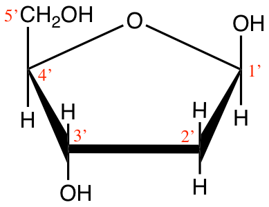
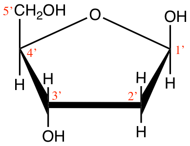

Chapter 4 Life’s secrets to make complex organic molecules
Chapter summary:
- Living organisms have a seemingly infinite complexity and diversity of molecules
- Yet, most organisms are made of 6 major atoms CHONSP assembled into four major molecular families: carbohydrates, proteins, lipids, and nucleic acids.
- Complex molecules are polymers of simple monomers
- Each molecular family has specific structure to achieve specific function. Details of each are summarized in this chapter
- In organic molecules, about 4 electrons are stored on each carbon atom, none on the phosphorus, and always 8 electrons on the nitrogen and sulfur atoms
4.1 Polymers of simple monomers
When scientists of the 18th century observed nature, they thought there had to be major differences between animated organisms and the inanimate ones. In fact they thought that the elements at the basis of the animated vs. inanimate things had to be different. One can only wonder at the incredible diversity and complexity of forms between a bacterium and humans, and between unicellular algae and sequoia trees! And yet, despite the incredible variations of life forms and sizes, there is a common theme: very complex organic molecules are polymers of relatively simple monomers.
In the image of a brick wall and the skyscraper in Figure 4.1, it is possible to make a small wall or a huge skyscraper. Brick walls are made of bricks and of mortar to hold the bricks together. If one adds metal pieces, wood, etc. the complexity of the final product can be infinite, yet it is made from simple elementary pieces.


Figure 4.1: Small and large structures can be built from the addition of bricks, one at a time
Living organisms are essentially made of very complex polymers, but which are all built from simple monomers. Just like in a building which complexity results from the assemblage of different types of material, e.g., bricks, wood, metal, etc., living organisms are assembled from distinct ‘types of molecules’. Among the very complex organic polymers, one can distinguish four molecular families (in addition to what we refer to as co-enzymes), where in each family, there is a repeated pattern. A molecular family can be defined as
- polymers of similar monomers within a family but distinct between families
- a mortar or chemical bonds which binds monomers together
The four molecular families that make organic molecules include:
- Carbohydrates
- Proteins
- Nucleic acids
- Lipids
4.2 Carbohydrates
Carbohydrates form the entry molecules onto which electrons are first stored in photosynthesis, and precisely on the carbon atoms. The generic formula for carbohydrates is (CH2O)n, and each atom, on average, has 4 electrons for itself as illustrated in Figure 4.2. We have seen in the previous chapter that having 4 electrons stored on each C is probably the most cost effective way to store many electrons on organic molecules.
Figure 4.2: Electron allocation of a generic carbohydrate (CH2O)n
Carbohydrates are a rather homogeneous group as they include clearly identified monomers and polymers of these monomers. Most monomers (monolignols being a notable exception) are C6 or C5 rings and can, depending on their nature and on their polymerization type, serve very different purposes including energy storage (e.g., starch), structure (e.g., cellulose or chitin of cructacean shells), or as backbone of RNA (e.g., ribose). On an everyday life basis, carbohydrates are present in paper, sugar, pasta, grain, etc (some common carbohydrates in food illustrated in Figure 4.3).
Figure 4.3: Assortment of everyday food containing carbohydrates. Obtained from https://www.measureup.com.au/all-about-carbohydrates/
4.2.1 Monosaccharides
The monomers of carbohydrates are called monosaccharides (from Greek monos, i.e., single, and sacchar, sugar) or called simple sugars or oses (from the Latin “full of, abounding in, having qualities of”). The monomers that are assembled into complex polymers generally are hexoses, that is that they have 6 carbons, and are isomers of glucose. However, monosaccharides do include more than just hexoses or C6H12O6, and it is important to present them in general, and not just the monomers of polysaccharides.
Most monosaccharides are made of 3 to 6 carbons (there actually are C7 to C9 oses) and are classified in aldoses or ketoses, depending on whether they have a aldehyde (-CHO) on their C#1 or a ketone (C=O) radical, usually on the carbon numbered #2 (details on these functional groups in sections 3.2.7 and 3.2.8). They either exist in linear chains and are then represented in Fischer projection like in Figures 4.4 and 4.5, or, for pentoses (C5) and hexoses (C6), exist in cyclic chains (Figures 4.7 and 4.6). Carbohydrates have been given a lot of codes and naming conventions and it is hard to avoid them if we want to put things together. So, do not be scared by all the names and letters used to describe and differentiate carbohydrates. The goal is:
- to realize the large diversity of monosaccharides
- to realize that the differences between, e.g., the hexoses are of steric consideration, i.e., which side are the hydroxyl (-OH) groups of the linear chain, right or left.
- to realize that C5 and C6 carbohydrates alternate between chain and cyclic molecular configurations. The cyclic form prevails for the functions of transport and structure that the carbohydrates provide. The chain form is the form needed for the release of electrons and energy. Both forms interchange freely for monosaccharides.
![classification of C3 to C6 aldoses in Fischer projection. Triose : (1) D-(+)-glyceraldehyde ; Tetroses : (2a) D-(−)-erythrose ; (2b) D-(−)-threose ; Pentoses : (3a) D-(−)-ribose ; (3b) D-(−)-arabinose ; (3c) D-(+)-xylose ; (3d) D-(−)-lyxose ; Hexoses : (4a) D-(+)-allose ; (4b) D-(+)-altrose ; (4c) D-(+)-glucose ; (4d) D-(+)-mannose ; (4e) D-(−)-gulose ; (4f) D-(−)-idose ; (4g) D-(+)-galactose ; (4h) D-(+)-talose. after Yikrazuul — personal work, public Domain, https://commons.wikimedia.org/w/index.php?curid=4030124](pictures/aldoses-nb.png)
Figure 4.4: classification of C3 to C6 aldoses in Fischer projection. Triose : (1) D-(+)-glyceraldehyde ; Tetroses : (2a) D-(−)-erythrose ; (2b) D-(−)-threose ; Pentoses : (3a) D-(−)-ribose ; (3b) D-(−)-arabinose ; (3c) D-(+)-xylose ; (3d) D-(−)-lyxose ; Hexoses : (4a) D-(+)-allose ; (4b) D-(+)-altrose ; (4c) D-(+)-glucose ; (4d) D-(+)-mannose ; (4e) D-(−)-gulose ; (4f) D-(−)-idose ; (4g) D-(+)-galactose ; (4h) D-(+)-talose. after Yikrazuul — personal work, public Domain, https://commons.wikimedia.org/w/index.php?curid=4030124
Time to incorporate some jargon. When in the chain form necessary for the carbons to donate their electrons, monosaccharides are called reducing sugars. This means that they are able to donate their electrons, to drive respiration and the generation of energy in the cell (details in Chapter 5). So, despite the fact that each carbon atom on monosaccharides has 4 electrons to give, potentially, this does not systematically happen. Strange, is it not? Indeed, for the pentoses and hexoses to be reducing sugars, they must be in the aldose form, or have a free aldehyde at the end of their chain or on carbon #1. So this rules out the ketoses? Actually no, the ketoses in the chain form can be readily tautomerized into aldoses. This is only important to explain some of the differences in disaccharides.
Figure 4.5: classification of C3 to C6 ketoses in Fischer projection. Triose : (1) dihydroxyacetone ; Tetrose : (2) D-erythrulose ; Pentoses : (3a) D-ribulose ; (3b) D-xylulose ; Hexoses : (4a) D-psicose ; (4b) D-fructose ; (4c) D-sorbose ; (4d) D-tagatose. after Yikrazuul — personal work, public Domain, https://commons.wikimedia.org/w/index.php?curid=6603584
You might wonder what the D-(+) or D-(-) might mean in the legends of Figures 4.4 and 4.5… This is due to optical rotation properties that a pure solution of a particular ose has because of the asymmetry of the molecules. The different forms of hexoses in, e.g., Figure 4.4 are called eniantiomers. D means that the hydroxyl group on the C#n-1 to the right of the molecule and most natural oses tend to be D (few oses have it on the left, in which case they are coded as L). The (+) or (-) tell whether the light rotation is pulled towards positive or negative angles. OK, lots of terms here, mostly to quench some of the curiosity of the biochemist in you.
Now that we have a more holistic view of what monosaccharides are made of, for all our purposes, we will reduce all this great variability to a few of them, which are glyceraldehyde (C3), ribose and deoxyribose (C5), and, glucose and fructose (C6). Glyceraldehyde is an important intermediate molecule of photosynthesis. We have seen the glycerol molecule in section 3.4, which is a propan-tri-ol, or three hydroxyl group on each of the 3 carbons. For glyceraldehyde, an end alcohol group is oxidized to an aldehyde group.
Figure 4.6: Cyclic structure or Haworth projection of alpha-D-glucopyranose (alpha-D-glucose; left) and beta-D-fructofuranose (beta-D-fructose; right)
As previously mentioned, pentoses and hexoses have the tendency to form cyclic or ring molecules ‘through a nucleophilic addition reaction between the carbonyl group and one of the hydroxyls of the same molecule. The reaction creates a ring of carbon atoms closed by one bridging oxygen atom’ (Wikipedia contributors 2018e). The most common rings are made of 5 or 6 atoms, respectively with four C atoms and one O atom, and, five C atoms and one O atom (cyclic forms also referred to as furanose and pyranose, respectively, because they closely resemble furan, and pyran rings). In Figure 4.6, both glucose and fructose are hexoses. But fructose generally forms furanose rings (5 atoms, including one oxygen atom), while glucose forms pyranose rings. The α and β correspond to whether the hydroxyl on the C#1 atom is below (α) or above (β) the plan made by the ring. Some more jargon here added for exactness of information only.
 

Figure 4.7: Cyclic structure of beta-D-Ribofuranose (beta-D-ribose) and 2-deoxyribose
Ribose and deoxyribose are the most important pentoses we need to know as they constitute one of the three ensembles that constitute nucleotides, i.e., the monomers of nucleic acids. They both exist either in furanose or pyranose forms, although the furanose form dominates, but the difference between ribose and deoxyribose is the missing oxygen atom on the C2’ atom (Figure 4.7). And yes, you guessed it right, this difference is the reason for the ‘R’ and ‘D’ in the RNA and DNA molecules. Notice that the carbon atoms are numbered in Figures 4.6 and 4.7. The numbers are ‘primed’ for the ribose and deoxyribose (Figure 4.7). This is a convention that geneticians have used to differentiate the carbons from the pentose to those of the base in nucleotides (see part on nucleic acids). This is anecdotal information again.
Now, as the pentoses and hexoses form rings, an interesting group appears and is referred to as the acetal group (see additional details in section 3.3.5. Yet another term needed to understand some of the subtleties of the functions of the di- and polysaccharides… For the aldohexoses to form rings, the aldehyde on carbon #1 (Figures 4.4) reacts with the hydroxyl of carbon #5 to form a 6 atom ring (e.g. for glucose on Figure 4.6). And in can easily revert to the chain structure to have a free aldehyde again and be a reducing sugar. For fructose, a ketohexose, the ketone from carbon #2, reacts with the hydroxyl of also carbon #5, to now form a 5 atom ring (Fructose on Figure 4.6). So why is this important enough to be mentioned here…?
In the ring versions of the glucose and fructose, the carbons #1 and #2 now have single bonds with two oxygen atoms. This group formed by a central carbon, and bonds in a tetrahedral as illustrated in Figure 4.8 is a rather special bond. In fact, special enough that it has some interesting consequences, with two different forms. If one of the atoms bound to oxygen is different than hydrogen (e.g., R’ and R" in Figure 4.8 both not H), then this group is called an acetal group, and the bond is a rather stable bond. If one of the R’ or R" in Figure 4.8 is H, while the other has some other radical, then the structure becomes asymetric, the group formed is then called hemiacetal as is not nearly as stable, which explains why the hexoses so easily switch from the linear chain to the cyclic configurations. This hemiacetal group is one of the basis of the glycosidic bond, which binds the cyclic pentoses and hexoses in di- and polysaccharides, but also with other molecules.
Figure 4.8: Structure of a generic acetal By NEUROtiker - Own work, Public Domain, https://commons.wikimedia.org/w/index.php?curid=3508032
So, what is there to remember about monosaccharides?
- Their formula is (CH2O)n where 3 < n < 6 generally
- The C3 atom monosaccharide to remember is glyceraldehyde
- Small differences in the position of hydroxyl, and in the cyclisation of the C5 and C6 make for different monosaccharides
- Each atom has on average 4 electrons for itself, making monosaccharides the ideal molecule to store and release energy electrons, although they have to be in the aldose chain form
- Thanks to all the hydroxyl groups, monosaccharides are extremely soluble in water.
- Glucose is arguably the most important monosaccharide and the only hexose molecule you are expected to know how to draw by heart
For glucose, and for organic chemistry in general, there are several ways of representing molecules. One of the ways is the Haworth projection as shown in Figures 4.6 and 4.7. Another way is called the Fischer projection as illustrated in Figures 4.4 and 4.5. Another way is called the skeletal formula where the carbons are implied at the corners and the ends of line segments, while oxygen and other remarkable radicals such as hydroxyl or amine are noted. Glucose is thus often represented as skeletal formula as in the left of Figure 4.9. Another even more simplified representation of glucose is represented in the ‘hyper’ skeletal formula. The latter has the advantage to be simple enough to be used to illustrate polysaccharides.
Figure 4.9: Skeletal formula for alpha-D-glucose (left) and ‘hyper’ skeletal formula (right)
4.2.2 Dissacharides
Sucrose, lactose, and maltose are three common dissaccharides. Dissacharides are bioses or polymers of two hexose monomers. Because they are still small, and thanks to their solubility in water (thanks to hydroxyl groups), they play an essential role to transport energy in chemical forms because for a slight increase of the osmotic pressure in a liquid, dissaccharides carry twice the number of electrons.
Dissaccharides correspond to the assemblage of two monosaccharides thanks to the glycosidic bond. The name of this bond suggests that it is very specific to carbohydrates, and it is true as one monosaccharide must be involved in a glysidic bond. So the glycosidic bond is a type of covalent bond that joins a carbohydrate (sugar) molecule to another group, which may or may not be another carbohydrate. The common theme, however, is that the carbon of the sugar involved corresponds to that of the hemiacetal group. There are 4 types of glycosidic bonds, depending on the atom directly linked to the hemiacetal carbon of the carbohydrate: O-, N-, S-, or C-glycosidic bonds. Figure 4.10 illustrates the generic O- and N-glycosidic bond.
Figure 4.10: Formation of glycosidic bonds between a hemiacetal Carbon and a hydroxyl or amine group, to respectively form O- and N-glycosidic bonds.
The N-glycosidic bond occurs in nucleotides and thus plays a major role. But overall, the term glycosidic bond generally refers to the O-glycosidic bond between two consecutive monosaccharides (Figure 4.11). In the end, and to go back to the brick and mortar analogy, for di- and polysaccharides, the glycosidic bond is the equivalent of the mortar.
Figure 4.11: Formation of glycosidic bonds between a glucose hemiacetal carbon and a methyl hydroxyde (top) or between two glucoses to form maltose
Lactose and maltose (Figure 4.12) are dissaccharides, respectively assembled from a galactose and a glucose, and, from two glucose molecules. Notice that these two molecules are reducing sugars, i.e., there is one hemicetal carbon (C#1) free to potentially open one glucose into a chain form, hence the ability for both lactose and maltose to be readily available as electron donors. This is quite nice for lactose produced by mammal females to be readily available for their offsprings. On another note, during seed germination, starch (details below) is hydrolyzed into maltose first by the amylase enzyme, and then readily participate in energy generation for this critical time of seed plant lives.
Figure 4.12: Lactose and maltose dissaccharides molecular formulae
Interestingly, sucrose in not a reducing sugar as both hemiacetal carbons (C#1 of glucose, and C#2 of fructose) are part of the glycosidic bond (Figure 4.13). There are several advantages:
Figure 4.13: Sucrose molecular formula
- Sucrose is a very stable molecule, and a lot more than lactose and maltose. Hydrolysis of the glycosidic bond is very slow and solutions of sucrose can last for a very long time.
- Because both hemiacetal carbons are bound, there are no more possibilities for an additional glycosidic bond to take place: sucrose stays as a dissaccharide
This is actually essential for green vascular plants, which assemble sucrose in their leaves from glucose and fructose, but must transport these molecules away from the leaves to minimize weight and avoid jamming of the photosynthesis. So having a very stable, highly soluble, not polymerisable, non reducing molecule is very advantageous. Sucrose can then be hydrolyzed thanks to the sucrase enzyme into glucose and fructose again for use or storage at other places in the plants.
So what is there to remember?
- The glycosidic bond always involves one hemiacetal group and is the key to for carbohydrate di-mers, and also poly-mers
- Dissacharides are small molecules which are easily soluble and easily transportable.
- For the a very similar osmotic pressure, dissaccharides carry twice as many electrons as monosaccharides: dissaccharides are the ‘go to’ transport molecules
- Sucrose is a non reducing sugar, which allows transportation of a precious cargo in sap very far from where it was produced (think about sequoias!)
4.2.3 Polyssaccharides or glycans
Polysaccharides are polymers of monosaccharides linked together thanks to the glycosidic bond, forming sometimes very long chains (at least more than 10 monosaccharides, or else are referred to oligosaccharides), either linear or branched. The polysccharide chains are also referred to as glycans, the suffix an implying a chain of monosaccharides. In glycan, the prefix glyc refers to the generic carbohydrate. The term glucan refers to a chain of glucose monomers, similarly, the term xylan, refers to a chain of xylose monomers, and so on.
Polysaccharides generally have two main functions: energy storage or structure. Because of the glycosidic bond, which removes a molecule of H2O, the general formula for a large polysaccharide is more like (C6H10O5)n often with 200 < n < 3500. For our purpose, it is important to remember that there are three main polysaccharides: homopolysaccharides or homoglycans, i.e., long chains of the same monomers (homo: same), and heteropolysaccharides or heteroglycans, long chains of a variety of monomers (hetero: different), generally separated into hemicelluloses and pectins.
4.2.3.1 Homopolysaccharides or homoglycans
Among the most important homopolysaccharides, one can distinguish starch and glycogen, which are both energy storage molecules for plants, and animals, respectively, and, cellulose which has a structure function making a lot of the plants cell walls (Figure 4.14).
Figure 4.14: Starch, glycogen, and cellulose are the three main homopolysaccharides of importance for our field. Obtained from https://www.sedelco.org/cms/lib/PA01001902/Centricity/Domain/506/05_Lecture_Presentation.pdf
All three molecules are polymers of α- and β D-glucoses. Starch is a polymer of α-D-glucoses linked together by carbons 1 and 4. Glycogen has essentially the same structure, although it has some branches thanks to a bound between carbon 1 and 6 (Figure 4.15).

Figure 4.15: Illustration of the 1-4 links between monomers of alpha-D-glucose for starch, plus 1-6 links to form branches for glycogen, and 1-4 links between monomers of beta-D-glucose for cellulose. Obtained from https://biochemikages005.wordpress.com/2014/02/10/carbohydrates/
Before we go on on describing the molecular structure of polysaccharides, it is time to reflect on their significance at the planet scale. Cellulose is the most abundant organic polymer on earth (Klemm et al. 2005). Thanks to the hydrogen bonds between adjacent β-D-glucose polymers, very strong cellulose microfibrils form, themselves bundled into macrofibrils, surrounded by hemicelluloses and lignin (Figure 4.16). Cellulose molecules can be hydrolyzed thanks to the cellulase enzyme, generally secreted by bacteria, although animals such as termites do produce a cellulase. Most mammals only have a limited ability to digest cellulose fibers, and even ruminants and monogastric herbivores use symbiotic bacteria to produce cellulase.
Figure 4.16: Illustration of Cellulose strands surrounded by hemicellulose and lignin in plant cell walls (Department of Energy’s Genomic, 1986).
So if cellulose is the most abundant molecule on earth, one needs to pause in the structure description of polysaccharides and locate where polysaccharides play a role. Cellulose is the basic structure of plant cell walls. Plant cells, are distinctively different from animal cells because of their cell wall. It is the resemblance with honeycomb cells that Robert Hooke coined the term cell for plants in 1665, the shape being well defined and distinctive thanks to the walls. The cell wall is located externally to the plasma membrane and is synthesized by the cell itself.
Morphologically, the cell wall is formed by layers or sheets. All cells have at least two: middle lamella and primary wall. The middle lamella is synthetized and shared by cells that are contiguous with each other, while the primary cell wall is synthetized and belongs to each cell. In some plant cells, a third thicker layer called secondary cell wall is deposited between the membrane and the primary wall. Most of the wood in the trees correspond to the secondary cell wall (Figure 4.17) (Pacheco Megías, Molist García, and Pombal Diego 2013)
Figure 4.17: Illustration of plant cell walls. Obtained from the Atlas of Plant and Animal Histology (Pacheco Megías, Molist García, and Pombal Diego 2013).
The outermost layer of the cell wall and the first to form is the middle lamella. It acts as a glue that binds neighboring cells. The middle lamella consists mainly of pectins, although it can be lignified in those cells that have a secondary cell wall. The primary wall consists mainly of cellulose, hemicellulose, pectins, glycoproteins. For the cells that have one, the secondary wall consists mainly of cellulose, hemicellulose and lignins (Figure 4.18; Pacheco Megías, Molist García, and Pombal Diego 2013; Loix et al. 2017).
Figure 4.18: Illustration of the glycans structure of plant cells with primary wall only (A), and plant cells with both primary and secondary walls (B) (Loix et al. 2017).
Of these different classes, only cellulose is well defined, consisting entirely of β-(1→4)-linked glucan chains. Pectin are highly heterogeneous polysaccharides, traditionally characterized by being relatively easily extracted with hot acid or chelators and by containing a large amount of galacturonic acid residues. Hemicelluloses traditionally comprise the remaining polysaccharides […] (Scheller and Ulvskov (2010))
4.2.3.2 Pectins
Pectins are heteroglycans based on galacturonans, or polygalaturonic acids, i.e. polymers of galacturonic acid monomers. For comparison purposes, the difference between glucose and galacturonic acid are illustrated in Figure 4.19 below. The alcohol functional group of glucose on C6 is oxidized into a carboxylic acid group, and the hydroxyl on C4 changes side. The main role of pectin is to give physical strength to the plant and to provide a barrier against the outside environment (Harholt, Suttangkakul, and Vibe Scheller 2010). Pectins also hold cells together. Fruit ripening (becoming softer) or leaf fall, are in part due to the decomposition of pectins by pectinase enzymes. Pectins also seem to play a role during seed germination, and as such also have an energy storage role, particularly thanks to the galactans and arabinans (Harholt, Suttangkakul, and Vibe Scheller 2010; Scheller and Ulvskov 2010)
Figure 4.19: Illustration of the differences between alpha-D-glucose and D-galacturonic acid monomers.
Harholt, Suttangkakul, and Vibe Scheller (2010) classify pectins in four categories (Figure 4.20):
- the homogalacturonans (HG), which are relatively homogeneous galacturonans, although some acetyl (-CH2-CH3) or methyl (-CH3, more details herein) groups can be added. These are the most abundant, ~65% (Harholt, Suttangkakul, and Vibe Scheller 2010)
- the xylogalacturonans (XGA), for which some xylose monomers are added to the the galacturonan chain thanks to the glycosidic bonds. XGA appear to be minor components of pectins.
- the Rhamnogalacturonans II (RGII), which still hold the galacturonan as the basic chain, but with complicated carbohydrate chains, containing rhamnose monomers in particular. RGII appear to be minor components of pectins.
- and the Rhamnogalacturonans I (RGI), for which rhamnose monomers alternate between galacturonic acids and that side carbohydrate side chains of arabinans and galactans. RGI constitute between 20-35% of the pectins.
Figure 4.20: Illustration of the general types of pectins. Notice that the common structure or pectin backbone (but for RGI) is the polymer of galacturonic acids, or galacturonan, to which, quite a diversity of monomers participate resulting in the large heterogeneity of these heteroglycans (Harholt, Suttangkakul, and Vibe Scheller 2010).
Again, this information is provided to expose readers to the extraordinary diversity of carbohydrates, and are not meant to be known in great details. It is important to remember that in addition to homoglycans, there are galactorunans, on which pectins are bases.
4.2.3.3 Hemicelluloses
Hemicelluloses are heteroglycans or heteropolysaccharides. The hemicellulose term was coined at a time when the structures were not well understood and biosynthesis was completely unknown. Hemicellulose is recognized as a group of wall polysaccharides that are characterized by being neither cellulose nor pectin and by having β-(1→4)- linked backbones of glucose, mannose, or xylose (Figure 4.21). These glycans all have the same equatorial configuration at C1 and C4 and hence the backbones have significant structural similarity (Scheller and Ulvskov 2010). For those of you who are curious about the ‘equatorial configuration’ term used here, this has to do with the steric configuration of the hydroxyl groups in the cyclic configuration of monosaccharides. This was not even introduced in this chapter, although it is an important consideration for chemists to characterize carbohydrates!
Figure 4.21: Illustration of the general types of hemicelluloses, which vary among species and plant groups. Notice the nomenclatures ending in -an, suggesting polysaccharides. OMe, represents methyl groups; Ac, represents acetyl groups; “Fer” represents esterification with ferulic acid (3-methoxy-4-hydroxycinnamic acid) (after Scheller and Ulvskov 2010).
The most important biological role of hemicelluloses is their contribution to strengthening the cell wall by interaction with cellulose microfibrilsand, in some walls, with lignin (e.g., Figure 4.17). All the hemicelluloses show differences in structural details between different species and in different cell types within plants (Figure 4.21).
4.2.3.4 Lignins
Lignin (from the latin lignum, meaning wood) is, after cellulose, the second most abundant terrestrial biopolymer, accounting for approximately 30% of the organic carbon in the biosphere. The ability to synthesize lignin has been essential in the evolutionary adaptation of plants from an aquatic environment to land. Lignin is crucial for structural integrity of the cell wall and stiffness and strength of the stem. In addition, lignin waterproofs the cell wall, enabling transport of water and solutes through the vascular system, and plays a role in protecting plants against pathogens (Boerjan, Ralph, and Baucher 2003).
It is thought that it is the multiple aromatic rings of the phenylpropanoids that provide the stiffness of lignin, hence of wood.
Figure 4.22: Three common monolignols, monomers for the lignin molecules: paracoumaryl alcohol (1), coniferyl alcohol (2) and sinapyl alcohol (3) By Yikrazuul - Own work, Public Domain
Lignins are polymers of a lot more complex monomers than the monosaccharides presented earlier. The monomers of lignin are called monolignols. Nothing to be scared of, because there is no expectation for the reader to know them! Technically, the lignin monomers are generally referred to as phenylpropanoids (which means that there is a phenol radical attached to a propane like C3 structure). The suffix -oid means pseudo), and technically derived from hydroxycinnamyl alcohol differing in their degree of methoxylation, p-coumaryl, coniferyl, and sinapyl alcohols (Figure 4.22).
Figure 4.23: Illustration of the diversity of monomers and polymer units present in lignins (Boerjan, Ralph, and Baucher 2003)
When introduced in the lignin polymer the corresponding monolignols are named guaiacyl (G), sinapyl (S), and hydroxyl-coumaroyl (H) units, respectively (Figure 4.23). The G, S, and H abbreviation letters are often used in the lignin literature. For example, the composition of lignin varies between plant species and tissues. In general, lignins from gymnosperms and related species (called softwood in English) are rich in G units and contains low amounts of H units, whereas lignins of angiosperm dicotyledons (flowing plants with reticulate or network-like leaf veins) are mainly composed of G and S units (corresponding to hardwood in English). For references only and to have some awareness of the diversity of the monomers and polymer units, Figure 4.23 has been added above. An example of a possible lignin structure is illustrated in Figure 4.24. It shows the great complexity of this second most important molecule on earth after cellulose.
Figure 4.24: An example of a possible lignin structure. The portion shown here has 28 monomers (mostly coniferyl alcohol), 278 carbon atoms, 407 hydrogen atoms, and 94 oxygen atoms. Karol Głąbpl.wiki
On an interesting note, it has recently been shown that polymerization of the monolignols is not random, but that monolignols are first assembled into lignol dimers (two monolignols), referred to as lignans. Lignans are thus dehydrodimers of monolignols (Davin et al. 1997; reviewed in Wang et al. 2013). There seems to be a plethora of lignans in nature, but exploring the literature on these reveals that some lignans, after ingestion by mamals may have anti-cancer properties! For the record and in case you are fascinated by how things are connected, some of the names and structures of these lignans are rather indicative of where they have been found or associated. For example in Figure 4.25, you can see that one of them is called pinoresinol, suggesting links with pine and resin. Another one is called lariciresinol. Larix is the genus name of the larches tree in English. Another one secoisolariciresinol, the prefix secoi-, likely having to do with sequoia, and so on. Podophyllotoxin at the left bottom is found in the toxic American mandrake, or ground lemon plant, but also on some flax seeds, and seems to be an interesting anti-oxidant for colon cancer (Fuss 2003).
Figure 4.25: Hypothetical biosynthetic pathway leading from coniferylalcohol to podophyllotoxin showing a variety of lignans or lignol dimers used in the biosynthesis of lignin, but also having antioxidant properties beneficial for the health of mammals (Fuss 2003)
4.2.4 Other important carbohydrates
It would be erroneous to leave out some additional mono- or polyssaccharrides out as some of them play a very significant role in biology and ecology. In a way, they correspond to the exceptions that confirm or rather complete the rule. So far, we have summarized monosaccharides with the general formula (CH2O)n, to essentially be mostly C5 and C6 molecule where the average carbon is bonded to an hydroxyl functional group and a hydrogen atom. And that these monosaccharides have the tendency to form 5 or 6 atom rings. Well, it turns out that on this general configuration, some of the hydroxyl groups are replaced by other functional groups.
The most famous one is probably is deoxybose, as it replaces ribose, as already mentioned above and illustrated again below (Figure 4.26).
Figure 4.26: Replacement of a hydroxyl group of ribose by hydrogen, effectively removing an oxygen atom or ‘deoxy-ing’ the ribose, hence the formation of deoxyribose
Several others that need mentioning are illustrated below. The first one is glucosamine where carbon number 2 has been replaced by an amine group. Glucosamine is a precursor of glycosylated proteins and lipids (glycosylated means that a sugar is linked with a protein/lipid other substituent via a glycosidic bond). When an acetyl group is added to the amine group of a glucosamine (via an amide bond), the resulting carbohydrate is called N-acetylglucosamine (Figure 4.27).
Figure 4.27: Important additional monosaccharides where the hydroxyl group has been replaced by an amine and an N-acetylamine
Two of these bonded via a glycosic bond form the monomer for chitin (Figure 4.28), i.e., the polysaccharide forming the exoskeleton of arthropods, such as crustaceans and insects, the radulae of molluscs, cephalopod beaks, and the scales of fish and lissamphibians [Wikipedia contributors (2019e); Figure 4.29].
Figure 4.28: N-acetylamine dimer forming the basis for the chitin polysaccharide that serves as exoskeleton of many invertebrates
The exoskeleton of these macroinvetebrates possesses excellent mechanical properties in terms of stiffness-todensity ratio and fracture toughness (Nikolov et al. 2011). This is explained by the microstructure of the exoskeleton, and how the chitin nanofibrils are put together (Figure 4.29).
Figure 4.29: Exoskeleton of the American lobster (Homarus americanus) formed by seven levels of microstrucutures of the nanofibrils of chitin, polysaccharide of N-acetylglucosamine (Nikolov et al. 2011)
Deoxygenation of the alcohol group of carbon 6 of glucose yields quinovose or 6-deoxyglucose (Figure 4.30). The methyl radical can become sulfanated by a sulfo- radical, to yield sulfoquinovose. Sulfoquinovose is one of the backbone sugars for glycolipids that form the innermembrane of thylakoids in chloroplasts (more details in section 4.5.5.3). The molecule quinovose is a sugar moiety of the quinovin molecule, extracted from the bark of the tree of the cinchena genus in South America. The local Quechuan name is kina, and the new kina, is a quina nova, hence the word quinovin by contraction. And the sugar or ose of the quinovin is thus named a quinovose.
Figure 4.30: Glucose, quinovose, and sulfoquinovose as important monosaccharides used as building blocks for glycolipids forming the inner membranes of thylakoids in chloroplasts
Lastly, carbohydrates play a major role in the communication between cells as carbohydrates small chains are often attached to membrane proteins and lipids, in which case proteins and lipids are referred to as glycoproteins and glycolipids, respectively (more details below).
Learning outcomes
at the end of this section on carbohydrates, you should be able to:
Monosaccharides:
- Their formula is (CH2O)n where 3 < n < 6 generally
- The C3 atom monosaccharide to remember is glyceraldehyde
- Small differences in the position of hydroxyl, and in the cyclisation of the C5 and C6 make for different monosaccharides
- Each atom has on average 4 electrons for itself, making monosaccharides the ideal molecule to store and release energy electrons, although they have to be in the aldose chain form
- Thanks to all the hydroxyl groups, monosaccharides are extremely soluble in water.
- Glucose is arguably the most important monosaccharide and the only hexose molecule you are expected to know how to draw by heart
4.3 Proteins
The second molecular family we choose to present is proteins.
Etymology Corner The word proteins used in English results from the French word protéine first coined by Dutch organic and analytical chemist Gerardus Johannes Mulder in an article published in 1838 (Mulder 1838), and later translated in German as Protein in 1839. Both words are based on the ancient greek πρωτειοζ or proteioz (~primary), because Mulder thought that the ‘organic acids making protéines appeared to be the primitive or principal substance that plants prepare for herbivores, which the latter provide to the carnivores’ (Mulder 1838; Hartley 1951).
Proteins correspond to single, or assemblages of, polymers of amino acids referred to as polypeptide chains.
This chapter is still under construction
4.4 Nucleic Acids
The third molecular family we choose to present are Nucleic Acids.
4.5 Lipids
Lipids are fatty acids and their derivatives, and substances related biosynthetically or functionally to these compounds (Christie 1987).
This is the best concise and satisfying definition! The scientific term “lipid” comes from the Greek “lipos” which referred to animal fat or vegetable oil. Lipids are mainly made of C and H atoms, but do also contain O, N, and P. So it is important to remember that lipids are made of CHONP. Lipids are a very heterogeneous group of molecules and are defined in part from their propensity to be soluble in non-polar solvents (no net dipole as a result of the opposing charges in the solvent molecules). In other words, lipids do not (or not easily) dissolve in water.
Contrary to carbohydrates, proteins, or nucleic acids, lipids are not obvious polymers of identified and clearly defined monomers. Rather, lipids are assemblages of well identified building blocks and backbones bonded together with ester, ether, and amide bonds. There are two main types of building blocks resulting in two major types of lipids: lipids built from fatty acid blocks (acyl groups) and lipids based from isoprene building units (ringed or not isoprene groups). Because there is no polymerization, lipids are relatively small molecules compared to polysaccharides, proteins, or nucleic acids.
Figure 4.31: Common everyday ingredients containing lipids. (obtained from http://blesslaboratory.com/index.php/services/oil
The carbons of lipids are generally a lot more reduced (have more electrons for themselves) than the ones of carbohydrates. For the latter, there are just about as many oxygen atoms as there are carbons, as a legacy of how they are formed during photosynthesis (details in chapter 6). Because of the number of oxygen atoms and their reactivity, carbohydrates are only able to form relatively short 5 and 6 carbon monomers, which tend to readily assemble into rings. Polymerization is what allows carbohydrates to form very large molecules.
Lipids aliphatic chains have almost no oxygen atoms instead, and always strategically located near the ends of the chains. Consequently, the carbons of the hydrocarbon chains are not as prompt to react together. The result is that it becomes possible to have longer hydrocarbon molecules (commonly C16 to C22, compared to C5 and C6 carbohydrates). The aliphatic chains are relatively chemically inert and interact together by low level van der Waals forces. These long aliphatic chains are the reasons for the mostly hydrophobic character of lipids (Figure 4.31).
However, the fatty acid-based lipids are amphipathic (also referred to as amphiphilic), i.e., that they have both hydrophilic and hydrophobic ends. The hydrophobic end or hydrophobic tail corresponds to the long aliphatic chain of the fatty acid residue. The hydrophilic end or hydrophilic head is associated with the other building blocks made of ionic and polar groups that include ester and amide bonds, the backbone, and other polar radicals (details below). The amphiphilic nature of some lipids allows them to form structures such as vesicles, multilamellar/unilamellar liposomes, or membranes in an aqueous environment (Wikipedia contributors 2019a).
Overall, lipids function as essential structural components of membranes, as signalling molecules, as chemical identifiers of specific membranes and as energy storage molecules (Meer, Voelker, and Feigenson 2008). Thousands of lipid molecules have been listed and an entire scientific discipline called lipidomics is dedicated to lipids structure and function! Rigorous classifications have been proposed (e.g., Fahy et al. (2005), Fahy et al. (2009)), and gateways on lipid research and updates are available (e.g., lipidmaps). Our goal here is to present enough of what lipids are and do.
Overall lipids may be divided into eight categories: fatty acids, glycerolipids, glycerophospholipids, sphingolipids, saccharolipids, and polyketides (derived from condensation of acyl subunits); and sterol lipids and prenol lipids (derived from condensation of isoprene subunits) (Wikipedia contributors 2019a)
4.5.1 Overview of fatty acid- or acyl-based lipids
In this category, are included fatty acids, glycerolipids, glycerophospholipids, saccharolipids, and sphingolipids. They all have in common the presence of long aliphatic carbon chains forming ‘tails’ of the molecules. The average carbon of a fatty acid chain is a methylene (-CH2-) such that each carbon atom has 6 electrons for itself (Figure 4.32). Consequently, lipids are, among the macromolecules, those which can store and release the most energy per carbon atom!
Figure 4.32: Electron allocation of a generic fatty acyl group (CH2)n. The group -CH2- is referred to as a methelene group
Lipids share with nucleic acids the ‘building block’ structure, in that they are built of identified building blocks. The quintessential acyl-based lipid is made of two fatty acids forming the hydrophobic tail end, a backbone, a phosphate or hexose, and a polar group. The two latter building blocks form the hydrophilic head, which tends to be a lot shorter than the hydrophobic end as illustrated in Figure 4.33 below.
Figure 4.33: Schematic of the quintessential fatty acid based lipid illustrating the amphipathic nature, and the different building blocks
From this simple construction, thousands of acyl-based lipid molecules exist following a wide variation on the fatty acids themselves, the three types of backbones, and on the polar groups (nature and number). And there are lots of exception to this general rule (e.g., Fahy et al. 2005, 2009). Nonetheless, Figure 4.34 summarizes how acyl-based lipids are constructed and how some of the classification has been derived. It reads from the bottom to top.
The first stage of molecules having only one of the building blocks are the fatty acids. There are so many of them that they are classified as a lipid group by themselves.
Figure 4.34: The main types of fatty acid based lipids: illustrating the common fatty acid base, and resulting from the three types of backbones and a variety of polar groups making the hydrophilic head)
The second stage molecules are lipids built from fatty acids + a backbone. The backbone molecules can bind with one to three fatty acids on one side, with ester (most often), ether, or amide bonds, and with other radicals on the other side allowing more building blocks to be added. There are three main backbone molecules: glycerol, hexosamine (glucosamine in Figure 4.34), and sphingosine. Mono-, di- and triacylglycerols (previously called mono-, di-, and triglycerides, respectively) play such an important role in metabolism and energy storage, that the glycerolipids have been identified as a group of its own. Glycerolipids with additional building blocks eventually lead to the glycerophospholipid family (green in Figure 4.34). The glucosamine (hexose with an amine group) eventually leads to the saccharolipid family (blue in Figure 4.34). Sphingosine plays both the role of a backbone and of a fatty acid thanks to its long saturated aliphatic tail. Sphingosine-based lipids eventually lead to the sphingolipid family (grey in Figure 4.34).
The third stage are lipid molecules built from fatty acids + a backbone + phosphate or a sugar. It is quite interesting to realize that only two molecules, phosphate or an hexose, play that role. They have enough hydroxyl functional group to make ester bonds with other groups. Most glycerophospholipids have a fourth stage of building blocks, and the third stage is thus an intermediate form. Many glycolipids and sphingolipids, however, only have stage three molecules and are incorporated into cell membranes as such.
The fourth stage are lipid molecules with four building blocks: fatty acids + a backbone + phosphate or a sugar + polar group. These molecules make about 50% of the cell membranes and thus play a major role in life. It is the amphipathic nature of these molecules that leads them to readily assemble into acyl lipid bilayers (generally referred to as phospholipids). The hydrophobic tails and hydrophilic heads tend to aggregate together forming a layer or sheet of molecules a bit like a bundle of wheat that would have the stems together and the wheat ears together. Because cells essentially are aqueous systems, the hydrophobic side of the layer is naturally unstable, unless it is stabilized by another layer of phospholipids, with the hydrophobic tails facing each other and the hydrophilic heads facing the aqueous phase of the cell (more details later).
Third and fourth stage acyl-based lipids all have similar features: they have a hydrophobic tail group, and a hydrophyllic head group. As a result, they tend to naturally congregate together to form the famous lipid bilayer in which proteins and glycoproteins, serving as cell receptors, catalyzers, or exchange regulators can readily embed.
In summary:
- Lipids, unlike other molecular families, are not polymers of monomers but are built from building blocks
- Fatty acid long (C16-C22) saturated or unsaturated chains are the basis of what lipids are, sterols being an exception
- Because there are very few oxygen atoms, carbon atoms have more electrons for themselves and lipids thus serve as energy storage for the cell and organisms
- Most membrane lipids are made of two fatty acids forming a hydrophobic tail, linked to a hydrophilic head, thanks to a backbone intermediate molecule
- It is the amphipathic nature of lipids that allow the formation of a bilayer membrane which create cell compartments and in which proteins can be inserted
Time to pause in the strict biochemical description of acyl-based lipids, and spend some time to introduce an overview of the function of these lipids in cell membranes. This should make the description of these be more fascinating later on.
4.5.2 Lipids as key to cell membrane structure and function
In this section, lots of concepts are thrown at the reader, whom might be a bit rebuted by so many apparently complicated names (although most of them already appear in Figure 4.34). I decided to present the membrane function first in hope of making the biochemical description of enough of the lipids more interesting. So no worries, read this as a fascinating introduction to the wonders of life, and of lipids!
The first important concept to grasp is that in the lipid bilayer, the adjacent lipid molecules are not bonded together. It is thanks to their hydrophilic and hydrophobic interactions, and to a lesser degree thanks to electrostatic interactions, that the membrane lipids stay together and that cellular membranes exist altogether. The membrane does not have a solid crystalline nature, but rather a more fluidic nature, where molecules can freely move about within their layer or sheet. Proteins can insert themselves into this bilayer system thanks to the fluidic behavior. They too must have some amphipathic properties as well with hydrophobic and hydrophilic ends. Because proteins are inserted in a mosaic pattern, the fluidic mosaic model proposed in 1972 [Singer and Nicolson (1972); Figure 4.35] was the first accepted model to describe membrane bilayer.
![The **fluidic mosaic model** as published by Singer and Nicholson [-@Singer1972-ng]. The filled circles represent the ionic and polar head groups of the phospholipid molecules, which make contact with water; the wavy lines represent the fatty acid chains which make contact which each other. The membrane is made of **two layers or leaflet of lipids** mirroring each other and touching each other from the fatty acid side. The integral proteins are shown as globular molecules partially embedded in, and partially protruding from, the membrane](pictures/fluidic-mosaic-bilayer-1972.png)
Figure 4.35: The fluidic mosaic model as published by Singer and Nicholson (1972). The filled circles represent the ionic and polar head groups of the phospholipid molecules, which make contact with water; the wavy lines represent the fatty acid chains which make contact which each other. The membrane is made of two layers or leaflet of lipids mirroring each other and touching each other from the fatty acid side. The integral proteins are shown as globular molecules partially embedded in, and partially protruding from, the membrane
The second important concept is that the diversity of membrane lipids and their layout and interactions together allow the concurrent formation of fluidic and more rigid areas in the membrane itself corresponding to different phases. The two main phases are the liquid-disordered phase, very fluidic, almost liquid-like, and the liquid-ordered phase, more gel-like and more rigid.
The liquid disordered phase is a highly fluid state in which individual lipids can move laterally across the surface of the membrane relatively unhindered. Liquid-disordered bilayers are often characterized by irregular packing of individual lipid molecules, as well as the presence of kinks in unsaturated fatty acids. These kinks effectively reduce the surface area accessible to other fatty acid chains, weakening van der Waals interactions (Membrane Phase Transitions, libretext).
When the fatty acid chains are more fully extended because they are more saturated, and/or because they interact with sterols (details below), they become more fully packed and the van der Waals interactions are increased. They yields to a more rigid gel-like structure referred to as the liquid ordered phase. And guess what, this is where the proteins are also located and this makes sense because they have a more rigid structure in which to stay (Figure 4.36).
![Membranes show a lipidic bilayer structure with lateral heterogeneity. Some lipids associate to form more dense areas known as *membrane nanodomains* or *lipid rafts*. In these domains, some proteins are included more frequently by electrochemical affinity. Cholesterol is located among the fatty acid chains, close to hydrophilic heads of the lipids, straighten fatty acids, and provide more rigidity to the membrane. Transmembrane proteins allow communication between extracellular and intracellular environments. Carbohydrates are found in the outer monolayer of the cell membrane forming the so-called glycocalyx. In this figure, the interactions of cell membrane molecules with cytoskeleton and with extracellular matrix are not depicted [Figure and caption after @Pacheco_Megias2013-ov and [Artur Jan Fijałkowski](https://en.wikipedia.org/wiki/Lipid_raft)](pictures/lipid-raft-combined.png)
Figure 4.36: Membranes show a lipidic bilayer structure with lateral heterogeneity. Some lipids associate to form more dense areas known as membrane nanodomains or lipid rafts. In these domains, some proteins are included more frequently by electrochemical affinity. Cholesterol is located among the fatty acid chains, close to hydrophilic heads of the lipids, straighten fatty acids, and provide more rigidity to the membrane. Transmembrane proteins allow communication between extracellular and intracellular environments. Carbohydrates are found in the outer monolayer of the cell membrane forming the so-called glycocalyx. In this figure, the interactions of cell membrane molecules with cytoskeleton and with extracellular matrix are not depicted [Figure and caption after Pacheco Megías, Molist García, and Pombal Diego (2013) and Artur Jan Fijałkowski
In other words, the number of unsaturated bonds in the fatty acid chains have a major impact on how fluidic the membrane is. The more unsaturated, the more kinks, and the more fluidic the membrane. Reversely, the more saturated, the less kinks, the more packed the hydrophobic tails, and the less fluidic the membrane. The addition of sterol lipids tends to generate the more rigid liquid ordered phase (Figure 4.37), and these tend to be present where the proteins are embedded in the membrane (Figure 4.36 and 4.38).
Figure 4.37: Liquid-order and liquid-disorder phases in membranes due to the level of saturation of fatty acids and interactions with cholesterol and transmembrane interactions. AP- anchored protein (after Harayama and Riezman (2018))
The aggregations of lipids around proteins are referred to as membrane rafts (or lipid rafts) or membrane nanodomains (Simons and Ikonen 1997; Edidin 2003) (Figure 4.36 and 4.38). And the lipids that give the liquid-ordered gel-like phase around proteins tend to include sphingolipids and cholesterols (Simons and Ikonen 1997; Ahmed, Brown, and London 1997; Hooper 1999; Varma and Mayor 1998; Edidin 2003; Toulmay and Prinz 2013; Schmidt and Davis 2017; Sezgin et al. 2017; Harayama and Riezman 2018), phosphatidylserine and cholesterol, and phosphatidylinositol, which, thanks to their long aliphatic chains, tend to interact from one leaflet of the membrane to the other (Figure 4.37).
An entire symposium on membrane raft generated this definition which highlights the importance of special lipids and their interactions with cholesterol:
Membrane rafts are small (10–200 nm), heterogeneous, highly dynamic, sterol- and sphingolipid-enriched domains that compartmentalize cellular processes. Small rafts can sometimes be stabilized to form larger platforms through protein-protein and protein-lipid interactions (Pike 2006).
![a | Lipid raft domains are usually defined as small, highly dynamic and transient plasma membrane entities that are enriched in saturated phospholipids, sphingolipids, glycolipids, cholesterol, lipidated proteins and glycosylphosphatidylinositol (GPI)-anchored proteins. Enrichment of these hydrophobic components endows these lipid domains with distinct physical properties; these include increased lipid packing and order, and decreased fluidity. In addition to membrane components, cortical actin plays an active part in domain maintenance and remodelling. Furthermore, membrane lipids are asymmetrically distributed in the inner and outer leaflets, which may further affect membrane organization. b | It is likely that membrane organization is not binary (that is, highly distinct raft and non-raft regions), but instead membranes consist of various raft-like and non-raft domains with distinct compositions and properties. [Figure and caption from @Sezgin2017-zw]](pictures/membrane-Sezgin2017.png)
Figure 4.38: a | Lipid raft domains are usually defined as small, highly dynamic and transient plasma membrane entities that are enriched in saturated phospholipids, sphingolipids, glycolipids, cholesterol, lipidated proteins and glycosylphosphatidylinositol (GPI)-anchored proteins. Enrichment of these hydrophobic components endows these lipid domains with distinct physical properties; these include increased lipid packing and order, and decreased fluidity. In addition to membrane components, cortical actin plays an active part in domain maintenance and remodelling. Furthermore, membrane lipids are asymmetrically distributed in the inner and outer leaflets, which may further affect membrane organization. b | It is likely that membrane organization is not binary (that is, highly distinct raft and non-raft regions), but instead membranes consist of various raft-like and non-raft domains with distinct compositions and properties. (Figure and caption from Sezgin et al. 2017)
Cholesterol, a name that has been used quite a bit until now although not defined, yet, seems to play a major role in membrane rigidity around the membrane nanodomains. It seems that the amide of the sphingolipid backbone can both donate and accept a hydrogen bond, and these hydrogen bonds are within the interfacial region of the membrane, in which the relative paucity of water increases the stability of these bonds (Sezgin et al. (2017); Figure 4.39).
Figure 4.39: Cholesterol can create hydrogen bond inside the water free membrane which provides additional rigidity to the membrane in lipid rafts (Figure after Sezgin et al. 2017)
The third important concept is that in addition to lateral heterogeneity around membrane nanodomains, the membrane lipids assemblage dictates the curvature of the membrane and the assemblage is asymetric between the inner and outer leaflets of the membrane (reviewed by Harayama and Riezman (2018); Figure 4.40). The very nature of the membrane lipids leads to a cylindrical shape, a conical shape, or inverted-conical shapes. When assembled together, these shapes allow for membrane curvature and fission (Figure 4.40). Additionally, some membrane lipids such as PhosphatidylSerine (PS), because of the serine (an amino acid) group as the polar group, tends to bind with cytoplasm proteins like actin (considered to be the cytoskeleton, or the skeleton that keeps animal cells together). As a result, PS tends to be on the inner leaflet of the membrane.
Figure 4.40: The shape of the different membrane acyl-based lipids leads to curvature of a membrane leafet, and the overall bilayer membrane results in part from the asymetric layout of the membrane lipids. SM - SphingoMyelin, PC - PhosphatidylCholine, CHOL - Cholesterol, PS - PhosphatidylSerine, PE - PhosphatidylEthanolamine, PE-O - PhosphatidylEthanolamine with ether bonds (after Harayama and Riezman (2018) and Skotland and Sandvig (2019))
The fourth and last important concept is that animal, plant, algal, or bacterial membranes do not have the same membrane lipids. Membrane lipids within an organism may differ from one organelle to the next. For example, the membranes of the thyllakoids, the organelle responsible for photosynthesis, are built with specialized galactolipids. Saccharolipids are found in bacteria only.
It was impossible to leave this section about membranes without providing what is considered a realistic representation of what a membrane might look like in reality. In other words, things are a lot more complex than our brain can fully handle!
Figure 4.41: Glimpse at the near future: model of the plasma membrane in full complexity. Featuring: a lipid bilayer composed of hundreds of different lipids, crowded with a large variety of embedded as well as peripherally bound proteins, a supporting actin skeleton, a cytoplasmic site full of proteins, and realistic gradients of metabolites, ions, and pH (Figure and caption from Marrink et al. 2019)
In summary:
- It is the amphipathic nature of membrane lipids that allows the formation of a bilayer of acyl-based lipids with the hydrophilic heads facing outwards and the hydrophobic tails facing inward
- Because acyl-based lipid molecules in each layer are not bonded together, the lipid molecules can move freely within the sheet
- Proteins are associated with membrane nanodomains where the membrane lipids have a liquid-order or gel-like phase and the membrane is more rigid.
- The membrane nanodomains or lipid rafts are largely enriched in membrane lipids that have straight saturated hydrophobic tails and are enriched with cholesterol
- It is the straight saturated hydrophobic tails of saturated acyls that shorten distances between molecules and increase van der Waals interactions, resulting in a more rigid structure.
- Hydrogen-binding between cholesterol and aliphatic tails add to membrane rigidity in these lipid rafts
- It is the unsaturated bonds in the hydrophobic tail that create kinks in most other membrane lipids, effectively maintaining larger distance between molecules, and weakening the van der Waals interactions, which in the end maintain a liquid-disordered of liquid-like phase of the membrane outside the membrane nanodomains
- The cylindrical or conical shape of the membrane lipids and their lateral placement dictate the curvature and shape of the membrane
- The presence and nature of proteins on the inner or outer side of the membrane is associated with the assymetry of the assemblages of lipids at the inner and outer leaflets of the membrane
- Membrane lipids composition may vary from an organism to another or with organelles within cells
Now that the overview of the functions of membrane lipids is in the reader’s mind, time to enjoy some more detailed biochemistry of lipids!
4.5.3 Fatty acids: lipids of their own and primary common building blocks
4.5.3.1 Saturated and unsaturated fatty-acid chains
So what are fatty acids afterall? Fatty acid are carboxylic acids with a long aliphatic chain (synonymous to long hydrocarbon chain or alkyl chain), which are either saturated (e.g., palmitic acid in Figure 4.42), mono-, or poly-unsaturated (i.e., there are at least one double bond between two consecutive carbon atoms, as illustrated in Figure 4.42; more details in section 3.1.2). The double bond in the aliphatic chain is rigid and can create ‘kinks’ in the 3D shape and their number and locations are key to their final 3D shape. Most fatty acids in nature have even number of carbons and range from 10 to 22 carbon atoms. Most present in membrane lipids have between 16 and 22 carbon atoms.
![Examples of saturated fatty acids (palmitic and stearic acids), mono-unsaturated oleic acid, and poly-unsaturated fatty acids exhibiting 'kinks', which when part of a membrane lipids, participate in the fluidic nature of the membrane. Sphingosine technically is not a fatty acid but is illustrated to show that it is straight like a saturated fatty acid. In XX:Y, XX corresponds to the number of carbon atoms, and Y corresponds to the number of unsaturated bonds. *ω-3* means that the last unsaturated bond is at 3 carbons from the end (red font). The blue numbers correspond to the carbon number from the carboxyl end. EPA and DHA are abbreviations for these fatty acids. Further explanation in the text below](pictures/fatty-acids.png)
Figure 4.42: Examples of saturated fatty acids (palmitic and stearic acids), mono-unsaturated oleic acid, and poly-unsaturated fatty acids exhibiting ‘kinks’, which when part of a membrane lipids, participate in the fluidic nature of the membrane. Sphingosine technically is not a fatty acid but is illustrated to show that it is straight like a saturated fatty acid. In XX:Y, XX corresponds to the number of carbon atoms, and Y corresponds to the number of unsaturated bonds. ω-3 means that the last unsaturated bond is at 3 carbons from the end (red font). The blue numbers correspond to the carbon number from the carboxyl end. EPA and DHA are abbreviations for these fatty acids. Further explanation in the text below
Fatty acids have been classified according to their carbon-chain length and their level of saturation.
According to their length,
- Short-chain fatty acid (SCFA) have aliphatic chains with less than 6 carbon atoms. Even acetic acid (CH2COOH, acid of the vinegar) is classified in this category; so is butyric acid (C4) present in butter.
- Medium-chain fatty acids (MCFA) are fatty acids with aliphatic tails of 6 to 12 carbons, which can form medium-chain triglycerides.
- Long-chain fatty acids (LCFA) are fatty acids with aliphatic tails of 13 to 21 carbons. These are the typical molecules to which the generic term is often associated.
- Very long chain fatty acids (VLCFA) are fatty acids with 22 or more carbons. VLCFA can represent up to a few percent of the total fatty acid content of a cell.
Fatty acids are then classified depending on whether they are saturated, mono- or polysaturated, but also whether there are some methyl, cyclic, hydroxyl, or nitro radicals in their chains, to name a few. This is way beyond the purpose of this book but many details can be found on the LipidWeb maintained by Dr. Christie or classified by Fahy (2005, 2009).
In addition to being precursors of other lipids, fatty acids have their own metabolic role. For humans, many fatty acids play essential roles in, e.g., brain activities, cellular messengers, or have been identified to have health benefits. Two fatty acids are considered essential fatty acids for humans, i.e., that humans need them but lack the ability to synthesize them (Figure 4.43).
Figure 4.43: α-linolenic acid (omega-3 acid) and linoleic acids (omega-6 fatty acid) are the two essential polyunsaturated fatty acids humans must ingest for their metabolic needs
4.5.3.2 The famous omega-3 and omega-6 fatty acids
The Alpha Linoleic Acid (ALA) is an omega-3 fatty acid. This very common everyday life denomination gives the opportunity to introduce some nomenclature and fascinating facets of fatty acids. As stated before, in organic chemistry in general, each carbon is given a number, carbon number 1 starting with the most important functional group. As a result, in fatty acids, the carbon of the carboxyl group is given the value “1” (blue numbers in Figures 4.42 and 4.43). In unsaturated fatty acids, the number and location of the double bond(s) are very important because, again, it influences the 3D shape of the aliphatic chains (Figure 4.42) and is reflected in the naming.
So the first approach to name fatty acid is to follow organic chemistry rules. For example, linoleic acid is a 18 carbon molecule and has two unsaturated bonds. The corresponding alkane is an octadecane, octadec- prefix meaning 18. But it also is a carboxylic acid, so the suffix will be -oic. It has two unsaturated bonds, so it is a diene, di- for 2, and -ene for alkene. The placement of the unsaturated bonds are on the 9th and 12th carbon. So its name is a 9,12-octadecdienoic acid or octadec-9,12-dienoic acid!! OK, but this does not really explain the omega part.
In molecules of 16 to 22 carbons, it became obvious to chemists that it was just as easy to count from the other end or methyl end (fewer carbons to count!) to locate the double bonds. So they started to also report counting from the methyl end. Since “the alpha and the omega” is a known biblical expression meaning “the beginning and the end”, the “alpha” of the fatty acid became the beginning of the aliphatic chain (i.e., carbon number 2, see α linolenic acid in Figure 4.43), and the “omega” became the end carbon of the aliphatic chain. The expression “omega-3” really means “omega minus 3”, or that the last unsaturated bond is located at three carbons from the end.
But what about the other double bond(s)? How does one know where it is (they are) located? Well, it turns out that for most polyunsaturated fatty acids, the double bonds are located every 3 carbons! Such that the carbons on each side of the double bonds are in the cis configuration, or that they ‘face’ each other rather than being on the oposite side of the double bond (in which case they would be in a trans configuration, further description in section 3.1.2). So lipid chemists have come up with much simplified nomenclature and the linoleic acid would then be referred to as a 18:2(n-3). This means that the fatty acid has 18 carbons, has 2 unsaturated bonds, the last one is the third carbon from the end (n-3, n replaces ω in most modern naming). And because there are no further precisions, all the double bonds are in a cis configuration and therefore the other double bond is at an (n-6) location. Voilà!
The omega-3 fatty acids are a gateway to health sciences and medicine! Briefly, the two essential fatty acids cited above serve as precursor to other very important fatty acids. The first notable one is the arachidonic acid (20:4(n-6)). The name arachidonic acid suggests that this acid is particularly present in peanut oil. You should now be able to write its formula before you check it out and verify it from Figure 4.42! Arachidonic acid is the preponderant fatty acid included in the membrane phospholipids. It is also the presursor of very important C20 and C22 fatty acids, building blocks of membrane phospholipids of the brain. In fact, there is high probability that you might have heard about the EPA (eicosapentenoic acid 20:5(n-3), eicos- meaning 20, -penten- meaning five double bonds), and DHA (docosahexaenoic acid 22:6(n-3); docos- meaning 22, -hexaen- meaning six double bonds). With ALA, EPA and DHA are the most talked and researched after omega-3 lipids!! And indeed, there are lots of evidence that these omega-3 are good for human health (e.g., Kris-Etherton, Hecker, and Binkoski 2004). Many conjugated (i.e., alternating single and double bonds; double bonds in trans configuration) polyunsaturated fatty acids have also recently been reported to have health benefits (e.g., Pariza, Park, and Cook 2000; Kris-Etherton, Hecker, and Binkoski 2004; Benjamin and Spener 2009) .
Because arachidonic acid is so widely needed and available, it is also the precursor of an entire family of fatty acid derivatives referred to as the eicosanoid lipids (eicos- meaning 20, -oid meaning “like” or “derivatives”). These are oxidated fatty acids (then referred to as oxylipins) that serve as cellular messengers in mammalians. Their names might be familiar and include prostaglandins (vasodilators) or thromboxanes (vasoconstrictors).
In summary:
- Fatty acids are carboxylic acids so technically even acetic acid (C2) or butyric acid (C4, in butter) are fatty acids.
- Their hydrophobicity comes from their relative long aliphatic chains (C10 and up)
- Saturated fatty acids have straight aliphatic chains and take little 3D space
- The number and placement of unsaturated (C=C) bonds dictates their 3D shapes from a simple kink like in oleic acid to almost snail like shape for DHA
- When a moeity of membrane acyl-based lipids, the nature and therefore shape of the fatty acids dictates the fluidity or rigidity of the membrane
4.5.4 Glycerolipids for energy storage
Nearly all the commercially important fats and oils of animal and plant origin consist almost exclusively (>95%) of the simple lipid class - triacylglycerols, which are chemically inert, highly hydrophobic and have a high energy density. This includes all the vegetable oils, such as those from corn (maize), olive, palm, and sunflower, and animal fats, such as tallow, lard and butter, as well as commercial products such as margarines (Christie, n.d.).
Figure 4.44: Formation of triacylglycerols by esterification of three fatty acids to a glycerol backbone
Triacylglycerols are the quintessential model for the fat lipids (e.g., Figure 4.31). They are assemblages of long chain fatty acids esterified to a glycerol backbone (Figure 4.44). Fatty acids very loosely represent the equivalent of monomers in lipids, but the ester bonds do not represent true polymerization as the fatty acids are not directly bonded together, but are bonded to a backbone instead.
Glycerolipids give the opportunity to reintroduce the term moiety. In a triacylglycerol, the glycerol moiety refers to as the part of the triacylglycerol that comes from the glycerol, illustrated in red in Figure 4.44. Lipids and nucleic acid monomers are assemblages of recognizable building blocks and each block in the final molecule is referred to as a moiety. The other moieties of triacylglycerol are the fatty acids.
There is an entire classification of triacylglycerols depending on which glycerol atom is bonded to which fatty acid. But that is beyond what is needed here. The word triacylglycerol has been preferred over the older triglycerides.
The equivalent of glycerolipids for the sugar backbone and sphingosine are covered in the sections below dedicated to saccharolipids and sphingolipids, respectively.
4.5.5 Glycerophospholipids or phospholipids for cell membranes
4.5.5.1 Phosphatidic acids as first type of third stage molecules
The next stage of building blocks after the glycerolipids is the addition of a phosphate moiety to a diacylglycerol via a phosphoester bond with the remaining hydroxyl group of the glycerol moiety (Figure 4.45) to form phosphatidic acid. This molecule is an intermediate molecule for the synthesis of glycerophospholipids, built from the addition of, a least, another polar group building block.
Figure 4.45: Formation of phosphatidic acid by esterification between a diacylglycerol and a phosphate
Notice that because phosphoric acid has three hydroxyl groups, it can theoretically make up to 3 ester bonds. In reality, this does not happen in organic molecules for several reasons. First, the tetrahedral shape of phosphate renders difficult the possibility of binding three aliphatic chains. Second, the electronic resonance makes the third hydroxyl much less attractive to forming bonds when the two others are already involved in bonds. So, for the vast majority of cases, phosphates can only form up to two phosphoester bonds.
Phosphatidic acid has two hydroxyls available for additional binding, and one of them is used to bind with the fourth stage building blocks constituted by polar groups. The phosphatidic acid becomes a substituent to the polar group and the resulting molecules are then referred to as phosphatidyl polar group name. These are the famous phospholipids that make the majority of the membrane bilayer of most plants, animals and bacteria. Another group called the glycolipids have a sugar instead of a phosphate moiety on the third stage. They are treated separately after the four stage phospholipid molecules below.
4.5.5.2 The main membrane phospholipids
The quintessential phospholipid is illustrated in Figure 4.33 and is the single unit of the membrane bilayer. Again, it is thanks to its hydrophobic double tail and its hydrophylic head that the phospholipids assemble into phospholipid sheets and into phospholipid bilayers. Two of the glycerol backbone carbons are linked to fatty acids, and the third to the phosphate moeity. There are three theoretical possibilities for this assemblage. In reality, it turns out that the placement of the fatty acyl and the phosphate ester bonds on the glycerol backbone is anything but random.
Chemists have thus given stereospecific numbering or sn to represent this fact. The word stereospecific has to do with the 3D configuration as rendered by the Fisher projection of the glycerol. But for us, the important fact is that the carbons of the glycerol are numbered and that the phosphate moeity is always bonded to the third carbon or is on sn-3. The only exception is the lysobisphosphatidic acid, where the phosphate moiety is on sn-1 (Christie, n.d.).
Interestingly, on the first carbon of the glycerol, or on sn-1 the fatty acyl is most often saturated, and it is on the second carbon, or sn-2 that unsaturated fatty acyls may be found. This is why in all the previous figures that represented phospholipids with a bead for the hydrophilic head and lines for the tails, there always is one of the tails represented as straight, illustrating the saturated fatty acyl on sn-1 and the second tail is either straight or kinked representing the saturated or unsaturated fatty acyl, respectively, on sn-2.
The diversity of phospholipids results primarily from the different assemblages of the fatty acyl on sn-1 and sn-2, and on the polar group of the hydrophilic head. There are additional phospholipids that do not strictly follow this 4-stage molecular assemblage (details below). It turns out that although there is an almost infinite number of possible combinations, in practice, some polar groups combine with a limited number of saturated and unsaturated acyl groups.
Figure 4.46: Variety of phospholipids showing the five most common polar groups and fatty acyls that tend to be preponderant for each of the polar groups. The fatty acyls on sn-1 is represented as saturated as is most often the case, and the unsaturated fatty acyls on sn-2 are represented as straight aliphatic chains although there are not in reality
Among the 4-stage phopsholipids, there are five well identified polar groups, which include ethanolamine, serine, choline, inositol, and glycerol. Because each of these polar groups are bound to phosphatidic acid via a phosphoester bond, they are called, respectively, phosphatidylethanolamine (PtdE), phosphatidylserine (PtdSer), phosphatidylcholine (PtdChl), phosphatidylinositol (PtdIno), and phosphatidylglycerol (Figure 4.46).
Phosphatidylcholine (PtdChl) is the most abundant lipid in the membranes of animal tissues; it is often a major lipid component of plant membranes, but only rarely of bacteria. With the other choline-containing phospholipid, sphingomyelin, it is a key structural component and constitutes much of the lipid in the external monolayer of the plasma membrane of animal cells especially (Christie, n.d.). Choline is an ethanolamine (see below) for which the amine group is in its cationic from (i.e., -NH3+) and where the hydrogens have been replaced by methyl groups to create (-N(CH3)3+). The positive charge on the nitrogen is compensated by the negative charge on the phosphate, making PtdChl a neutral phospholipid. The fatty acids on sn-1 tend to be 16:0 and 18:0 for both animal and plant cells, and 18:1 and 18:2 on sn-2 (Christie, n.d.), so relatively small number of unsaturated bonds compared to other phospholipids. PtdChl is rarely being found in bacteria, although it is often the main complex lipid in eukaryotes (Christie, n.d.).
Phosphatidylethanolamine (PtdE) is usually the second most abundant phospholipid class in animal and plant tissues, and it can be the major lipid class in microorganisms (Christie, n.d.). Ethanolamine corresponds to an ethane or C2 with one hydroxyl group (-OH) on one carbon making ethanol, and an amine group (-NH2) on the second carbon; the two combined is called ethanolamine. It is bound to the phosphate via a phosphoester bond. The amine group in PtdE tends to be in its cationic form, making PtdE also a neutral phospholipid. The fatty acids tend to mimic those of PtdChl although there is a higher proportion of polyunsaturated (e.g., 20:4) acyls on sn-2 for animal cells. PtdE is often the most abundant lipid class in many bacterial species and may be accompanied by phosphatidylserine and phosphatidylglycerol (Christie, n.d.).
Phosphatidylserine (PtdSer) is a weakly acidic lipid that is present in most tissues of animals and plants and is also found in microorganisms. Under normal conditions, it is located entirely in the inner monolayer leaflet of the plasma membrane and other cellular membranes (Christie, n.d.). Serine is an amino-acid (details in section 4.3) and tends to readily bind to proteins within and outside the membrane with cytoplasmic proteins such as actins making the cytoskeleton of animal cells. The fatty acids on sn-1 tend to be 18:0 for animal cells, and be long polyunsaturated 20:4 and 22:6 on sn-2 (Christie, n.d.), so relatively high number of unsaturated bonds compared to other phospholipids.
Phosphatidylinositol (PtdIno) is a common constituent of animal, plant and microbial lipids. Inositol is an interesting carbohydrate: it is a cyclohexane, for which each carbon has been oxidized and lost a hydrogen for a hydroxyl (-OH). So it has six alcohol groups or is an hexol, with the same general formula as glucose, i.e. C6H12O6. Glucose has an aldehyde group on its 6th carbon and is thus different. In animal tissues, the characteristic feature of fatty acids is a high content of stearic (18:0) and arachidonic (20:4) acids. The long tails of arachidonic acids from PtdIno on both sides of the membrane seems to be able to form hydrogen bonds, participating in the liquid-ordered phase of membranes (e.g., Figure 4.37). The hydroxyl groups of inositol react with phosphate to from inositol mono-, bi- or even tri-phosphates, all of which PtdIno play, in animal cells, important signalling and other functional activities, including cell communication via signal transduction, cell survival and proliferation, membrane trafficking and modulation of gene expression (Christie, n.d.). Phosphatidylinositols also serve as anchors to proteins (see protein anchor in Figure 4.36) in animal cells.
While the previous phospholipids are common in eukaryot cells, bacterial cells tend to have different types and proportions of phospholipids.
Phosphatidylglycerol is a lipid present in the three kingdoms of life although it is a major component of some bacterial membranes. The charge on the phosphate group means that it is an anionic lipid at neutral pH with a larger head group than might be expected because of hydration and with a cylindrical shape overall.
Phosphatidylglycerol is found in almost all anaerobic bacterial types, representing 20-25% of the phospholipids in most Gram-negative bacteria, i.e. with a double (outer and inner) phospholipid envelope, where it is present only in the inner membrane. In Gram-positive bacteria, which have a single phospholipid bilayer coated with peptidoglycans, it can be as high as 60% of the phospholipids (together with glycosyl diacylglycerols). In cyanobacteria and plants that are able to carry out aerobic photosynthesis, phosphatidylglycerol is found in all cellular membranes - 2 to 5% of the plasma membrane. In bacteria, phosphatidylglycerol especially is widely distributed and it is found in most genera; uniquely it is the only glycerophospholipid in the membranes of certain cyanobacteria (Christie, n.d.).
The last of the phospholipids presented here is cardiolipin, which was originally found in animal heart tissue (Figure 4.46). It can be seen as the condensation of two phosphatidylglycerol molecules into one. Cardiolipin is present universally in both prokaryotes and eukaryotes where it represents an important phospholipid component of specific membranes in those organelles whose function is to generate an electrochemical potential for substrate transport and ATP synthesis. Thus, it is found almost exclusively in certain membranes of bacteria (plasma membrane and hydrogenosomes) and a few species of Archaea (haloarchaea), and in mitochondria of eukaryotes (up to 20% of phospholipids) (Christie, n.d.). This phospholipid is rather negative thanks to the two negative charges of the phosphate, which may explain its role in maintaining electrochemical potentials across the membranes (see Chapter 5).
There are other phospholipids described in exhaustive classifications, but this is beyond the scope of this book. Additional references include the LipidWeb, Fahy et al. (2005) and Fahy et al. (2009) as good starters.
Phospholipids by definition involve phosphate as a central moiety between the backbone and the polar group. This is one of the reasons for which phosphorus and phosphate in particular are so essential for life to exist on this planet. However, we will see that phosphorus in reality is not readily available in many areas of our planet and this is why it has historically been a limiting nutrient on our planet for the longest time. This has recently changed (since the late 1950s) thanks to the mining and manufacturing of artificial fertilizers. However, because phosphorus was in so short supply, organisms have found ways to still build their membranes using the building block principle, but without using phosphate, and using hexoses instead.
4.5.5.3 Glycosyldiacylglycerols or where phosphates are replaced by sugars
The title is a bit of a mouthful, one has to admit… But the idea here is that instead of a phosphate in phosphatidic acid, the diacylglycerol moiety is bonded to a sugar via a glycosidic bond. The sugar moeity, because it is linked via this glycosidic bond is called a glycosyl group, hence the name (Figure 4.47). Sugars have multiple hydroxides hence possibilities to make bonds with other hydroxides, and in this case with the last hydroxide available on the glycerol backbone of diacylglycerols.
Figure 4.47: Formation of a glycosyldiacylglycerol by binding a galactose to a diacylglycerol moiety using a glycosidic bond to form the majority of the innerside of the membrane lipids of thylakoids in chloroplasts and cyanobacteria
The sugars acting as backbones are galactose or digalactose (two galactoses bonded by a glycosidic bond), but also a sulfoquinovose presented in the carbohydrate section and glucuronic acid (Christie, n.d.). The three glycolipids illustrated in Figure 4.48 are the membrane lipids essential to photosynthetic tissues in both higher plants and cyanobacteria. In fact these three account for more than 85% of the membrane lipids in thylakoids of plant plastids and cyanobacteria (Kobayashi 2016). These glycoglycerolipids are equivalent to and may substitute for phosphoglycerolipids, especially when the supply of phosphorus is restricted (Essigmann et al. 1998; Güler et al. 1996). In fact, these glycolipids are the most abundant lipid classes in leaf (photosynthetic) tissues (Christie, n.d.).
Figure 4.48: Three main glycolipids that make the majority of the innerside of the membrane lipids of thylakoids in chloroplasts and cyanobacteria
In summary:
- Phospholipids are the core molecules that form membranes that allow compartmentalization in cells essential to life as they regulate exchanges and allow formation of gradients
- This is possible thanks to the unique assemblage of two long chain fatty acids on a glycerol backbone forming the hydrophobic side, and on the other side, a phosphate and a polar group resulting in a hydrophilic side
- The overall charge of the phospholipids depend on whether the negative charge of the phosphate is balanced or not by the charge of the positive charge of the polar group.
- Phosphatidylcholine is the most common phospholipids in eukaryot and prokaryot cells. Some organelles and cells can contain high proportion of specific phopholipids like the cardiolipin in organelles maintaining electrochemical potentials across the membrane
- There is a relative correlation between the fatty acid types and the polar groups
- Phosphate limited environements have lead certain bacteria and cyanobacteria to develop fatty acylglycerol-based membrane lipids that use sugars instead of phosphates
4.5.6 Sphingolipids use sphingosine as backbone/fatty acid
The second major type of acyl-based lipids are called sphingolipids. From their original discovery from brain cells in the 1880s to modern times, sphingolipids have shown some enigmatic traits (Thudichum 1884; Merrill et al. 1997; Spiegel and Milstien 2003). The original building block is sphingosine (C18). This molecule originally discovered in brain has many of the traits of saturated fatty acids because of its long saturated aliphatic chain, yielding the same hydrophobic properties of fatty acid tails. Carbons 1 and 3 are oxydized into alcohol groups, carbon 2 has an amine group, while there is a double bond between carbons 4 and 5 (Figure 4.49). The amine group can react with the carboxyl group of a fatty acid to form an amide bond, to form ceramide, which is the equivalent of diacylglycerol or second stage molecules described above. The prefix cer- in ceramide has its roots in the word cerebral, for brain, following the early discoveries. The amide bond is rather rigid thanks to the partial double bond between the amine and the carbonyl functional groups (details in section 3.2.10), which reduces the aliphatic chain fluctuations. This with the added rigidity thanks to cholesterol molecules (details in seciion 4.5.11 below), shortens the intermolecular distances between sphingomyelin molecules and facilitates the formation of hydrogen bonds between them thereby promoting the formation of a hydrogen bond network and a stable ordered phase (Christie, n.d.). The hydroxyl group on carbon 1 can bind with polar groups such as phosphocholine or phosphoethanolamine, or sugars (Figure 4.49).
As a result, sphingosine serves as a backbone because it can bind with a fatty acid on the hydrophobic tail end and with a polar group to form a hydrophilic head. Sphingosine also plays the role of a second fatty acid thanks to its hydrophobic saturated tail. Sphingosine is the most prevalent of the many (over one hundred!) sphingoid bases that have been identified, which differ depending on the number of carbons, whether there are two (or d- for di-) or three (or t- for tri-) hydroxyl groups, and whether there is, and the location of, a unsaturated C=C double bond, to keep it short. Sphingosine has its unsaturated bond between carbons 4 and 5, and in the trans or E (for German Entgegen) configuration (details in section 3.1.2). Sphingosine is thus abbreviated as 4E-d18:1, meaning 4E for unsaturated bond starting on carbon 4 with the Entgegen configuration, d because there are two hydroxyls on C1 and C3 (the amine group is always on C2 in sphingoid bases), 18:1 for a C18 aliphatic chain overall and one unsaturated bond. For example, bases include dihydrosphingosine which is a d18:1, phytosphingosine which is a t18:1, and dehydrophytosphingosine which is a 7E-t18:1 (Christie, n.d.).
Figure 4.49: Illustration of sphingolipids and their building blocks. A fatty acid added to sphingosine, forms ceramide. Addition of phosphoethanolamine and phosphocholine polar groups form sphingomyelins, or the addition of sugar(s) form glycosphingolipids (or glucosylceramides)
Many polar groups have been identified for sphingolipids including phosphocholine or phosphoethanolamine, for which the resulting lipids are called sphingomyelins. Sugar based polar groups form a great variety of molecules referred to as glycosphingolipids that are very important in brain tissues.
More generally, however, sphingolipids play a very important role in the membrane nanodomains, where in conjuction with cholesterol, form the liquid-ordered, gel-like phase, membrane proteins are inserted (details in section 4.5.2). The fatty acids of sphingolipids are very different from those of glycerolipids, consisting of very-long-chain (up to C26) odd- and even-numbered saturated or monoenoic (Christie, n.d.). This additionally renders the ceramide residue to have a cylindrical shape (Figure 4.42), which, in conjunction with hydrogen bonding between cholesterol and the sphingoid base residues, increase the van der Waals electrostatic forces, and favor the liquid-ordered phase of the membrane nanodomains. Finally, sphingolipids play an important, yet still relatively enigmatic, signalling function in animal organisms (Spiegel and Milstien 2003).
Etymology Corner
The prefix sphingos- in sphingosin or in sphingolipids is the genitive of sphinx in Greek. In Greek mythology, the sphinx is a female monster with the body of a lion, the head and breast of a woman, eagle’s wings, and a serpent’s tail. She dwelt outside the city of Thebes, and asked a riddle to all travellers, in order to let them pass and would eat those who could not answer the riddle. While working on the chemistry of the brain, the German-born British chemist J. L. W. Thudichum discovered this new type of molecules and in particular sphingosine, which presented many enigmas to its discoverer. “In commemoration of the many enigmas, which it presented to the inquirer, I have given the name of Sphingosin” (Thudichum 1884).
4.5.7 Saccharolipids in bacterial membranes
The last group of acyl-based lipids include saccharolipids, where the backbone for attaching the acyl chains are sugars, namely glucosamines and sometimes glucosamine disaccharides or sugar dimers (hence the prefix saccharo- for sugar backbone, by opposition to glycero- for glycerol backbone in glycerolipids; Fahy et al. (2005)). What a mouthful, yet again…! The most infamous saccharolipid is commonly referred to as Lipid A and is the part of endotoxins of Gram-negative bacteria that is inserted in outer monolayer of the outer membranes (Raetz and Whitfield 2002). Endotoxins are toxins for most animals. They are attached to the bacteria membranes themselves, as opposed to exotoxins that are released by bacteria in their environments. When bacterial cells are lysed by the mamalian immune system, fragments of membrane containing lipid A are released into the circulation, causing fever, diarrhea, and possible fatal endotoxic shock (also called septic shock). The Lipid A moiety is a very conserved component of the endotoxins. However Lipid A structure varies among bacterial species and Lipid A structure defines an overall host immune activation, sometimes violent (Wikipedia contributors 2019f). In other words, saccharolipids are bad news if they get into the blood systems of mammals…
Figure 4.50: Chemical structure of lipid A as found in E. coli, and its place in the a bacterial endotoxin. Notice the two glucosamine bonded together and four fatty acids on one of them and two on the second. After Mike Jones
For our purpose here, saccharolipids and lipid A in particular (Figure 4.50) have the same basic structure of a hydrophilic head and hydrophobic tail. The role of the hydrophobic tail is fulfilled by fatty acids. The hydrophilic head is fulfilled by the the glucosamine and the two phosphates. Lipid A corresponds to the part of endotoxins of Gram-negative bacteria that is embedded in the membrane (Figure 4.50). Endotoxins, built from a lipid anchor and a polysaccharide chain are referred to as lipopolysaccharides, a mix between carbohydrates and lipids really.
In summary:
-
Sphingolipids play an analog role as those of phospholipids in the membrane.
- The saturated aliphatic chain of sphingosine results in a straight aliphatic chain, as opposed to kinks observed in unsaturated fatty acids
- This associated with the amide bond between sphingosine and the saturated fatty acyl group generates ceramides, equivalent of diacyl-glycerols, which tend to be rather cylindrical in shape taking much less space in the membrane and less prone to move
- The accumulation of Sphingolipids, with that of cholesterol, near membrane nano-domains creates the conditions for the presence of liquid-ordered or gel-like phase in which membrane proteins can insert
- Saccharolipids are only present in bacteria membranes where they readily insert in the phospholipids membrane because of similar amphipathic properties
4.5.7.1 Other acyl-based lipids of biogeochemical significance
In addition to saturated and unsaturated fatty acyl moeities, other configurations of fatty acids play an important role in the fluidity of the membrane, but they only concern prokaryotic cells, some of which of biogeochemical significance. Some fatty acids are called branched fatty acids as they have methyl groups along their aliphatic chains. s and This results in less packing of the membrane, and therefore a higher fluidity of the membrane (e.g., Poger, Caron, and Mark 2014).
Figure 4.51: Examples of branched fatty acyl chains commonly found in bacterial membranes. The PPC letters stand for Palmitoyl PhosphoCholine, and the number-letter prefix varies depending on the presence, location, and number of methyl groups. (Further details in Poger, Caron, and Mark (2014))
Others are called cyclic chain fatty acids, where rings of cyclopropane (C3), cyclobutane (C4), up to cycloheptane (C7), are inserted at the ω end of the fatty acids (Figure 4.52). The effects of these ringed tails, as they increase space between fatty acid chains seem to increase the membrane fluidity, particularly for the unsaturated rings. However, the large saturated rings (C6 or C7), because of the space they take and the lack of electronic resonance, seem to reduce their own mobility, thereby reducing the overall fluidity of the membrane around them (Poger and Mark 2015b).
Figure 4.52: ω-Alicyclic Fatty Acids, i.e. cyclic rings inserted in the ω position of the fatty acyl moiety having 3 to 7 carbons in the ring (from Poger and Mark (2015b))
Cyclopropane inserted within the fatty acid chains do tend to create higher fluidity of bacteria membrane (e.g., Grogan and Cronan 1997; Poger and Mark 2015a, 2015b). Some cyclopropene fatty acids have been observed in plants cells as well. They seem to inhibit desaturation during the synthesis of fatty acids and pheromones in insects and so may protect plants against insect attack (Christie, n.d.).
Figure 4.53: Examples of cyclopropane fatty acids found in bacterial membranes. The PPC letters stand for Palmitoyl PhosphoCholine, and the number-letter prefix varies depending on the presence, location, and number of cyclopropane groups. (Further details in and after Poger and Mark (2015a))
Anammox bacteria, of the order of Planctomycetales, have recently been recognized to possibly have a major biogeochemical role as they can oxidize ammonium under anaerobic conditions (details in section ??). Ladderane lipids (named after the word ladder because of their shape) were reported in 1999, as part of the membrane lipids of the anammoxosome organelle of anammox bacteria (Sinninghe Damsté et al. 2002). These C17-C20 ladderane lipids contain three linearly concatenated cyclobutane rings and one cyclohexane or five cyclobutane rings (X and Y, respectively, in Figure 4.54. Ladderane fatty acids are esterified with methanol or the glycerol backbone, and the ladderane alcohols are ether-linked with glycerol, all in different combinations (Figure 4.54). First, these lipids seem not to have a phosphate or other polar moiety. Second, they readily assemble into very compact ladderane lipid sheets (right side of Figure 4.54), which has been surmized to largely lower the diffusion of toxic byproducts such as hydrazine (N2H4) and hydroxylamine (NH4OH) from the anammoxosome.
Figure 4.54: Ladderane lipids as described in 1999 account for about 50% of the membrane lipids of the anammoxisomes. They are thought to assemble into very compact lipid sheets, giving rise to an exceptionally dense membrane, thus a tight barrier against diffusion, allowing the oxidation of ammonium under anaerobic conditions to proceed. After (Sinninghe Damsté et al. 2002)
Archeabacteria, considered as the first phylogenic organism group, and now considered as one of the three groups with eubacteria and eukaryots, have membrane acyl-based lipids where the hydrophobic tails are bonded to the hydrophilic backbone through ether bond, and not ester bonds anymore (De Rosa and Gambacorta 1988). Additionally, their fatty acids are built upon isoprenoid chains (further details on isoprenoids in section 4.5.10), i.e., in this case saturated chains methylated every 4 carbons. This must affect the fluidity of the membrane.
Figure 4.55: Isoprenoid diethers basic components of some complex lipids of archaebacteria (De Rosa and Gambacorta 1988)
Possibly more surprising and showing how cell membranes evolved, the core membrane lipids of archeobacteria are bipolar amphipatic molecules with ‘fused’ hydrophobic isoprenoid tails, bonded with ether bonds to the hydrophilic heads on opposite sides to form isoprenoid tetraethers, and, have cyclic rings inserted in the isoprenoid tails. This can only add rigidity to the membrane, a feature that is obtained in eukaryotic cells with sphingolipids combined with cholesterol lipids.
Figure 4.56: Isoprenoid tetraethers basic components of some complex lipids of archaebacteria (De Rosa and Gambacorta 1988)
but cyclobutane rings seem to create higher membrane compaction (Moss et al. 2018, more details in section 4.5.13.3).
Other fatty acids are oxidated and have hydroxyl groups, others have one or several triple bonds (acetylenic fatty acids), while others have nitro groups added. This is a bit anecdotal here but more details may be found on the LipidWeb.
4.5.8 Summary about the acyl-based-lipids
Broadly, acyl-based lipids are at the basis of cell membrane formation, and serve as the energy storage molecules in organisms. Their long mostly-saturated aliphatic chains are able to store many electrons, which are physically stored as triacylglycerols in organisms as there are few free fatty acids. The long aliphatic chains are the reasons for the general hydrophobicity of lipids. The magic of these fatty acids (and sphingosine tails) is their ability to bind with more polar groups such as phosphate, choline, inositol, etc., thanks to a molecular backbone, giving many of the acyl-based lipids their amphipathic nature. This is the basis of all compartmentilization in living cells by the phospholipid bilayer, allowing for the creation of gradients, exchanges, barriers, etc., all needed to form organisms of several to billions of cells that need to interact and communicate together.
This concludes the part on acyl-based lipids. The next part explores the lipids which structures are originally based on chains of isoprene subunits. They play a complementary role of acyl-based lipids in membranes and play a major role as messengers, e.g., in the form of vitamins and hormones.
4.5.9 Overview of the isoprene-based lipids
4.5.9.1 Isoprenoids built from isoprene subunits
Everyone has heard about steroids. And everyone has heard about cholesterol. These are sterol-based lipids. They belong to a larger group of molecules, which includes prenol-based and steroid-based lipids, which have isoprene units as their common molecular skeleton. So no, you did not read monomer, you read unit, but honestly it would be tempting to use the term isoprene monomer and polymerization of isoprenes to form isoprenoid molecules or terpenes (literally derivatives of isoprenes) and their derivatives which include prenol-based and steroid-based lipids.
If you thought that the acyl-based lipids were complicated, think again, because prenol-based and steroid-based lipids will take you to the next level in the intricacy of lipid chemistry! At the same time, it really is fascinating and it opens the doors to molecules and name we have all heard about: vitamins or essential oils.
Etymology Corner
The words isoprene and terpene have rather convoluted etymologies. In 1860, the English scientist and analytical chemist Charles Greville Williams analyzed caoutchouc and gutta percha (latex from the Palaquium tree) by destructive distillation and obtained a large quantity of a light oil which he termed isoprene (Williams 1860). The term isoprene can be analyzed from iso- (“equal; different, isomeric”) + prop- (“three carbon prefix”) + -ene (“alkene suffix”). It is really unclear how Williams came up with this name. This is an unfortunate misnomer.
The word terpene is derived from the word “terpentine”, an obsolete form of the word “turpentine” (Wikipedia contributors 2019h). The latter seems to come from the Latin/French térébenthine, and Greek terebenthos (τ ε ρ ε β ι ́ ν θ ι ν ο ς), referring to the resin of the terebinth tree Pistacia terebinthus, which produces the pistachio nut. Turpentine resins, secreted by resinous trees to protect wounds or cuts in the trunks, has been harvested throughout the world. The one harvested from the long leaf pines (Pinus lacustris) of the coastal plain of the Eastern USA was highly sought after from the 17th to 19th centuries. It made the wealth of cities like Wilmington, N.C., along with tar and pitch (sticky liquids produced by burning pine branches and logs very slowly in kilns (History 2012)) used in the naval industry.
The pine resin, after purification and distillation, separates into a liquid aromatic part, turpentine or oil of turpentine, and a solid part called rosin or colophony. Rosin is extensively used (among many others) for its friction-increasing capacity, particularly on bow hair of string instruments so it can grip the strings and make them speak, or vibrate clearly. Turpentine oil was used in making paint, paint thinner, and various medicines (History 2012). Many terpene molecules described in this chapter are present in the oil of turpentine.
So isoprene is a C5 double unsaturated molecule (Figure 4.57), which animals and plants produce, the latter to protect leaf cells against extreme heat. It turns out that it is the assemblage of two isoprene units bonded to a pyrophosphate (called geranyl pyrophosphate - GPP; Figure 4.57) that is the beginning of many isoprenoids, otherwise also named terpenes (etymology explained above).
4.5.10 Prenol or isoprenoid lipids
The name for the family comes from the alcohol version of isoprene, called prenol (Figure 4.57), where the hydroxyl group takes advantage of the original double bond on the tail of the molecule (carbon 4; Figure 4.57), which relocates the remaining double bond between carbons 2 and 3 (Figure 4.57). Geranyl pyrophosphate is at the basis of many polyprenols and just about all terpenes. Polyprenols play an important function acting as natural bioregulators and are found in small quantities in various plant tissues (Wikipedia contributors 2019c).
Figure 4.57: Isoprene and prenols; Geranyl pyrophosphate is the precursor of most terpenes or isoprenoids. Geranyl pyrophosphate is formed from DiMethylAllyl PyroPhosphate (DMAPP) and its isomer Isopentanyl PyroPhosphate (IPP)
4.5.10.1 Many familiar isoprenoids
Isoprenoids or terpenes have several important characteristics: they tend to be very aromatic, have the tendency to not stay as straight molecules as depicted in Figure 4.57, but rather to fold into carbon rings.
Figure 4.58: Examples of two monoterpenes formed by the propensity of prenols to form cycles. After Fred the Oysteri and Hbf878
Because geranyl-pyrophosphate is the initial building block of most terpenes, and because it has two isoprene units (Figure 4.57), terpenes tend to have even numbers of isoprene units (although there are many isoprenoids with odd numbers of isoprene units, e.g. Table 4.1). Hemiterpenes, Monoterpenes, Sesquiterpenes, diterpenes, triterpenes, and tetraterpenes respectively refer to isoprenoids with 1, 2, 3, 4, 6, and 8 isoprene subunits (Table 4.1).
| Terpene type | Examples |
|---|---|
|
Hemiterpenoids (half-terpene) |
|
| Monoterpenoids |
|
|
Sesquiterpenoids (one & a half terpene) |
|
| Diterpenoids | |
| Triterpenes | |
| Tetraterpenes |
|
The propensity of prenols to form cycles is at the basis of the formation for example of the lanosterol, precursor of all steroid lipids, from squalene (a common oil found in shark liver; Table 4.1 and Figure ??). Vitamin A (retinol) is a bi-product of β-carotene, both of which exhibit carbon rings (Table 4.1). Carotene is a photosynthetic pigment important for photosynthesis absorbing in the ultraviolet, violet, and blue light and scatter orange or red light, and (in low concentrations) yellow light. Carotene is responsible for the orange color of the carrots (hence its name) and many other fruits and vegetables. As a precursor to vitamin A, carotenes, must be ingested by humans. Xanthophylls are photosynthetic pigments giving the yellow color, even in egg yolk, located mostly in leaves where they act to modulate light energy. They are very close to, and essentially are oxygenated versions of carotenes (Table 4.1).
The cycling propensity of isoprenoids also exist for many aromatic terpenes referred to as essential oils. Contrary to what the word essential means for fatty acids or amino acids, i.e., that humans do not synthesize them and must be acquired through food, essential oils refer to the propensity of these molecules to become very volatile and contain the “essence of” the plant’s fragrance. Molecules such as geraniol are found on the leaves of geranium plants, geranial or citral give a strong lemon (citrus) odor, limonene is found in many citrus plants, pinene in pine, thymol in thyme, menthol in mint (actually a terpenoid because it has an oxygen atom, and not a terpene sensu stricto, which have only carbon atoms), humalene in humulus lupulus or hops in Latin, etc. In fact, many students have heard about terpenes because they are synthesized on the trichomes or plant hair of cannabis leaves, and offer various aromas for their use, along with possible medical benefits.
Isoprene and many essential oils, being very volatile, are closely involved in production of the air pollutant, ozone. In addition, when they are oxidized by atmospheric ozone, ·OH, or NOx radicals, aerosols may form that cause scattering of the sunlight; since the intensity of the scattering is proportional to \(1/ \lambda^4\), the short wavelengths λ are enhanced in the scattered light, making it look blue (Rayleigh scattering). This is the main explanation for, e.g., the appearance and the name of the Blue Ridge Mountains of North Carolina which hosts many conifer species.
Some authors question whether the ‘essential oils’ and many terpenoids belong to the lipid family at all (e.g., Christie (n.d.)), but we thought that it was a missed opportunity not to mention them here.
4.5.10.2 Vitamins E and K
Finally, isoprenoid side chains are present in quinone based isoprenoids such as vitamin K, needed for blood coagulation (Koagulation in Danish), plastoquinone and ubiquinone involved in the electron transport chains of, respectively, the chloroplasts and mitochondria. The long isoprenoid chains of plasto- and ubiquinone allow these molecules to readily insert within the phospholipid bilayer of the membrane of these organelles.
Figure 4.59: Quinone based isoprenoids including vitamin K, needed for blood coagulation (Koagulation in Danish), plastoquinone and ubiquinone involved in the electron transport chains of, respectively, the chloroplasts and mitochondria. The quinone functional group is represented in magenta
Tocol-based isoprenoids like tocopherols and tocotrienols, collectively known as tocochromanols (Christie, n.d.) including molecules such as vitamin E, are essential for animals and humans, which must ingest enough of them for their growth. In plants, they are especially important as antioxidant molecules, limiting the damage from photosynthesis-derived reactive oxygen species during conditions of oxidative stress, including high-intensity light stress (Christie, n.d.).
Figure 4.60: Tocol-based isoprenoids including vitamin E, essential for animals and humans, and acting as important antioxidant molecules
In summary:
- Prenol or isoprenoid lipids comprise a very large number of molecules based on the common isoprene C5 building unit.
- Molecules with C and H atoms only are called terpenes, the others isoprenoids
- Isoprenoids have the propensity to be assembled in pairs because geranyl pyrophosphate (two isoprene units) is the molecule upon which most of them are built. As a result, molecules with 4, 6, or 8 isoprene units are called di-, tri-, and tetraterpenes(oids)
- Isoprenoids have the propensity to form carbon rings, which are among the reasons why they are so aromatic to our olfactory sense.
- Essential oils, although not always classified as lipids, provide everyday life experience of isoprenoids in the smell of mint, pine, lemon, thyme, lavender, etc.
- Isoprenoids such as carotene, xanthophyll (tetraterpenoids) play a major role in capturing light energy in photosynthesis, while plasto- and ubiquinone play a major role in the electron transfer chain in the chloroplast and mitochondrion membranes
- Vitamin A, E, and K are prenol lipids
4.5.11 Sterol lipids
4.5.11.1 Cholesterol and oxysterols
The most famous of the sterol lipid is cholesterol as it plays an essential role in the animal cell membrane rigidity as already described in section 4.5.2 above. All sterol lipids are derived from the triterpene squalene (Table 4.1 and 4.61), eventually leading to two slightly different precursors: lanosterol for animals and fungi, and cycloartenol for plants and algae. Because of this distinction, phyto- and zoosterols are a bit different. Sterol and steroid lipids all have fused rings and a planar geometry, which gives them rigidity and strength. As a result, they play an essential role in membrane stability and particularly in lipid rafts where the membrane has less a fluidic property, and more of gel like properties (details in section 4.5.2).
Figure 4.61: Synthesis of lanosterol and cycloartenol, the precursors of respectively the zoo- and phytosterols lipids from DiMethylAllyl PyroPhosphate (DMAPP) and its isomer Isopentanyl PyroPhosphate (IPP), geranyl pyrophosphate (GPP), to squalene, before it goes into cyclization to form four fused carbon rings
Zoo- and phytosterols are consistent within their kingdoms, but in reality extremely close at the molecular scale and in their functions of stabilizing the cell membranes near nano-domains and stabilizing proteins in the membrane as cholesterol may strongly bind to them (Christie, n.d.). Zoosterols are based upon cholesterol molecule, a C27 molecule, or triterpene that has lost 3 methyl groups. The oxygenated derivatives of cholesterol are called oxysterols and correspond to the partial oxidation of cholesterol (e.g., cerebrosterol in Figure 4.62).
Etymology Corner
The English word cholesterol, comes from the French cholestérol, itself derived from the word cholesterine proposed by French chemist Michel Engène Chevreul in 1816: “Je nommerai cholesterine, de χολη [choli], bile, et στερεος [stereos], solide, la substance cristallisée des calculs biliares humains, … I will name cholesterine — from χολη (bile) and στερεος (solid) — the crystalized substance from human gallstones …” (Chevreul 1816). François Poulletier de la Salle seems to be the first actual discoverer of cholesterol crystals in 1758 or 1769 although he did not publish his results, which were later quoted by his collaborators.
4.5.11.2 Phytosterols and hopanoids
Higher plant sterols are very close to animal cell cholesterol, with the variations on the C24 (additions of methyl or ethyl groups) and double bonds between C22 and C23 (e.g., campesterol in Figure 4.62). Ergosterol, the main sterol in fungi and yeasts, has an additional double bond between C7 and C8 (Figure 4.62). It is remarkable to observe that there is little variation in animal sterols, cholesterol being the dominant form, other than the oxidative derivatives, while there are more than 8 plant sterols identified, with small variations among them.
Figure 4.62: Cholesterol is the most common zoosterol. Cerebrosterol is an oxidated derivative of cholesterols in animals. Ergosterol is the equivalent of cholesterol for fungi and yeast. Campesterol is one of the many plant sterols characterized by additional side chains on the C24. All atoms and bonds differing from the animal cell cholesterol are highlighted in red
Bacteria and other prokaryotic organisms such as blue-green algae do not in general contain any of the conventional sterols found in plants and animals (there are always exceptions), but rather many species have related molecules, i.e. pentacyclic triterpenoids based on a hopane skeleton with four cyclohexane rings and a cyclopentane E-ring and termed ‘hopanoids’ Perhaps the most abundant hopanoid in living organisms is tetrahydroxybacteriohopane (Christie, n.d.).
Figure 4.63: Tetrahydroxybacteriohopane, the most abundant hopanoid in bacteria and other prokaryotic organisms, has very similar functions to those of sterols in the membranes of animals and plants in that they can intercalate into phospholipid bilayers and modulate the fluidity of membranes by interacting with their complex lipid components
4.5.11.3 Steroid signal molecules
Among the most remarkable sterol lipids are the steroid hormones, and particularly the sex hormones and cholecalciferol hormone better known as vitamin D.
Estradiol and testoterones have lost the aliphatic chain of the reference cholesterol. Estradiol is a naturally occurring hormone that circulates endogenously within the human body. It is the most potent form of mammalian estrogenic steroids and acts as the major female sex hormone. As such, estradiol plays an essential role in the regulation of the menstrual cycle, in the development of puberty and secondary female sex characteristics, as well as in ageing and several hormonally-mediated disease states. Testosterone is the most important androgen, i.e., the major male sex hormone, in potency and quantity. It is remarkable to see how apparently relatively small differences between the two molecules can make such fundamental differences!
Cholecalciferol (vitamin D3) is a steroid hormone produced in the skin when exposed to ultraviolet light or obtained from dietary sources. The active metabolite of cholecalciferol, calcitriol plays an important role in maintaining blood calcium and phosphorus levels and mineralization of bone. Appropriate levels of vitamin D must be upheld in the body in order to maintain calcium and phosphorus levels in a healthy physiologic range to sustain a variety of metabolic functions, transcription regulation, and bone metabolism.
Figure 4.64: Estradiol and testoterone as the major female and make sex hormones, respectively. All differences in atoms and bonds are highlighted in orange and green. Cholecalciferol (vitamin D3) is a metabolite of cholesterol and necessary for the calcium and phosphate regulation in the human body
The transport of sterol lipids through vascular animal organisms is problematic because, despite the hydroxyl group of the A carbon ring of cholesterol (Figure 4.62) that make sterol lipids somewhat polar, cholesterol is insoluble in water, very much like all lipids and in particular triglycerides. A specialized type of pseudo-organelles called lipoproteins transports hydrophobic lipids through the body. This organelle is formed by a single layer of phospholipids assembled as a sphere creating a hydrophilic outer surface soluble in water, and a hydrophobic compartment inside in which cholesterol, cholesterol esters and triglycerides are stored. Inserted proteins called apolipoproteins provide structural, communication and enzymatic activities.
Figure 4.65: Chylomicron, or the largest of the lipoproteins which serve in transporting lipids in vascular animal organisms. T: Triglycerides; C: Cholesterol; ApoA, ApoB, ApoC, ApoE: lipoproteins By Xvazquez
Depending on the size of the sphere, scientists have named these High Density Lipoproteins (HDL; 5-12 nm diameter), Low Density Lipoproteins (LDL; 18-25 nm diameter), Intermediate Density Lipoproteins (IDL; 25-35 nm diameter), Very Low Density Lipoproteins (VLDL; 30-80 nm diameter), and chylomicrons (75-1200 nm diameter) (Feingold and Grunfeld 2018). The HDL and LDL acronyms are rather well known and are common indicators reported in routine blood analyzes. Cholesterol in lipoproteins is often esterified with fatty acids to form sterol esters, making the molecules much less polar than free cholesterol.
Interestingly, cholesterol is not metabolized by humans as a source of energy, despite the fact that it stores quite a few electrons. Instead, cholesterol is a precursor of hormones, vitamin D, and its metabolites (e.g., bile acids) serve as surfactant in the digestive system to help digestion and assimilation of nutrients and essential molecules (e.g., amino-acids, monosaccharides, essential fatty acids).
In summary:
- Almost all sterol and steroid lipids have four fused rings and a planar geometry, which gives them rigidity and strength. These properties are essential for their functions in cell membranes
- They are all derived from the triterpene squalene
- Zoo- and phytosterols play an essential role in the membrane nanodomains by rendering the membrane in a liquid-ordered phase, i.e., more gel-like and more rigid
- Sterols tend not to serve as a source of energy in animals, but rather are degraded into metabolites that serve as surfactant in the digestive system to help digestion and assimilation of nutrients and essential molecules (e.g., amino-acids, monosaccharides, essential fatty acids)
- Animal sterols (with triglycerides) being hydrophobic are carried in the blood in specialized single phospholipid layered vesicles called lipoproteins, the most known of which are HDL and LDL, usually in the form of sterol esters
- Essential metabolites of cholesterol include sexual hormones and vitamin D
4.5.12 Summary about the isoprene-based lipids
Broadly, isoprene-based lipids are all based on isoprene units, which have the capacity to stay as linear chains, or form saturated and unsaturated carbon rings. The cyclization is complete with sterol lipids where mostly four fused rings and a planar geometry are at the basis of the structural strength of many zoo- and phytosterols when inserted in the acyl-based bilayer of membranes. Sterol metabolites such as steroid hormones play a major role in the development of animals. Isoprenoids such as prenol lipids play important role in energy capturing and electron transfer, as well as communication molecules, including vitamins and hormones.
This concludes the part on isoprene-based lipids. The next part briefly presents other lipids or biological importance we thought would fit better in their own part.
4.5.13 Other notable lipids
4.5.13.1 Waxes as fatty acid esters
There is no satisfactory definition of the word “wax” in chemical terms. It is derived from the Anglo-Saxon word “weax” for beeswax, so a practical definition of a wax may therefore be “a substance similar in composition and physical properties to beeswax”. Biochemists often link waxes with the thin layer of fatty constituents that cover the leaves of plants or provide a surface coating for insects or the skin of animals for which primary requirements are spreadability and chemical and metabolic stability. Such surface waxes are produced by specialized cells or glands, and all tend to contain wax esters as major and perhaps defining components, i.e. esters of long-chain fatty alcohols with long-chain fatty acids. (Christie, n.d.).
Most waxes are formed by two (fatty acid + fatty alcohol) or three moieties (fatty acid + fatty alkane-di-ol + fatty acid), in which case they are referred to as diester waxes. Waxes form the cuticle of plant leaves, but are also secreted by specialized glands in animals, in which case they tend to be associated with triacylglycerols and/or sterol esters. The uropygial gland of birds produces waxes gives feathers their water tightness. Spermaceti or the substance present in sperm whale and skulls of other dolphin and whales, is made by 75% of cetyl palmitate and 25% of triacylglycerols. The other animal wax of commercial value is wool wax of lanolin having waterproofing properties that aids sheep in shedding water from their coats. Lanolin contains up to 50% wax esters and 33% sterol (lanosterol) esters (Christie, n.d.).
4.5.13.2 Polyketides
Polyketides are a large group of secondary metabolites which either contain alternating carbonyl and methylene groups (-CO-CH2-) (Wikipedia contributors 2020). Many mycotoxins produced by fungi are polyketides or polyketide derivatives and many are commonly used as antimicrobial, antiparasitic, and anticancer agents. Important examples of these drugs include erythromycins, tetracylines, nystatins, avermectins, and antitumor epothilones (Fahy et al. 2005).
Fahy et al. (2005) classify them as lipids while others (e.g., Christie (n.d.)) do not.
4.5.13.3 Natural cyclic fatty acid based lipids
Branched-chain fatty acids are common in bacterial and archaeal membranes where their concentration often exceeds that of linear-chain fatty acids. The variations in the presence, nature, and number of branching groups in fatty acids lead to distinct physicochemical properties of the lipids that in turn result in biological membranes with unique structural and functional properties (Poger and Mark 2015b).
Some bacteria and Archea have peculiar fatty acids chains that include cyclic The physiological rationale for cyclopropane ring formation in bacterial membranes remains obscure.
There are many other lipids that have been described in detail (e.g., Fahy et al. (2005); Christie (n.d.)), but we decided that they would not aid to synthesize what lipids are.
In summary:
- Lipids are fatty acids and their derivatives, and substances related biosynthetically or functionally to these compounds (Christie 1987)
- Long aliphatic chains may store many electrons and lipids are thus the energy storage molecules
- Fatty acyl chains open the possibility for amphiphatic properties with hydrophobic tails and hydrophilic heads, which allows the formation of very tight membranes and compartmentalization of the cell
- Phosphates play an essential role in the structure of acyl-based membrane lipids and on the polar nature of the heads (along with moeities containing nitrogen)
- The methylated and unsaturated aliphatic chains (e.g., isoprenoids), tend to form carbon rings, yielding lipids such as sterols which are small, yet strong enough to rigidify cell membranes
References
Ahmed, S N, D A Brown, and E London. 1997. “On the Origin of Sphingolipid/Cholesterol-Rich Detergent-Insoluble Cell Membranes: Physiological Concentrations of Cholesterol and Sphingolipid Induce Formation of a Detergent-Insoluble, Liquid-Ordered Lipid Phase in Model Membranes.” Biochemistry 36 (36): 10944–53. https://doi.org/10.1021/bi971167g.
Benjamin, Sailas, and Friedrich Spener. 2009. “Conjugated Linoleic Acids as Functional Food: An Insight into Their Health Benefits.” Nutr. Metab. 6 (September): 36. https://doi.org/10.1186/1743-7075-6-36.
Boerjan, Wout, John Ralph, and Marie Baucher. 2003. “Lignin Biosynthesis.” Annu. Rev. Plant Biol. 54: 519–46. https://doi.org/10.1146/annurev.arplant.54.031902.134938.
Chevreul, Michel Eugène. 1816. “Recherches Chimiques Sur Les Corps Gras, et Particulièrement Sur Leurs Combinaisons Avec Les Alcalis. Sixième Mémoire. Examen Des Graisses d’homme, de Mouton, de Bœuf, de Jaguar et d’oie“ (Chemical Researches on Fatty Substances, and Particularly on Their Combinations with Alkalis. Sixth Memoir. Study of Human, Sheep, Beef, Jaguar and Goose Fat).” Annales de Chimie et de Physique 2: 339–72. https://books.google.com/books?id=DHCz1nhhYL8C&pg=PA346#v=onepage&q&f=false.
Christie, William (bill) W. n.d. “The LipidWeb (Formerly the LipidHome) - an Alternative Lipid Library - Lipids, Fatty Acids, Composition, Chemistry, Biochemistry, Mass Spectrometry, Blog.” https://www.lipidhome.co.uk/index.html. https://www.lipidhome.co.uk/index.html.
Christie, William W. 1987. High-Performance Liquid Chromatography and Lipids: A Practical Guide. Pergamon Press. https://play.google.com/store/books/details?id=wcnwAAAAMAAJ.
Davin, L B, H B Wang, A L Crowell, D L Bedgar, D M Martin, S Sarkanen, and N G Lewis. 1997. “Stereoselective Bimolecular Phenoxy Radical Coupling by an Auxiliary (Dirigent) Protein Without an Active Center.” Science 275 (5298): 362–66. https://www.ncbi.nlm.nih.gov/pubmed/8994027.
De Rosa, M, and A Gambacorta. 1988. “The Lipids of Archaebacteria.” Prog. Lipid Res. 27 (3): 153–75. https://doi.org/10.1016/0163-7827(88)90011-2.
Edidin, Michael. 2003. “Lipids on the Frontier: A Century of Cell-Membrane Bilayers.” Nat. Rev. Mol. Cell Biol. 4 (5): 414–18. https://doi.org/10.1038/nrm1102.
Essigmann, B, S Güler, R A Narang, D Linke, and C Benning. 1998. “Phosphate Availability Affects the Thylakoid Lipid Composition and the Expression of SQD1, a Gene Required for Sulfolipid Biosynthesis in Arabidopsis Thaliana.” Proc. Natl. Acad. Sci. U. S. A. 95 (4): 1950–5. https://doi.org/10.1073/pnas.95.4.1950.
Fahy, Eoin, Shankar Subramaniam, H Alex Brown, Christopher K Glass, Alfred H Merrill, Robert C Murphy, Christian R H Raetz, et al. 2005. “A Comprehensive Classification System for Lipids.” Eur. J. Lipid Sci. Technol. 107 (5): 337–64. https://doi.org/10.1002/ejlt.200405001.
Fahy, Eoin, Shankar Subramaniam, Robert C Murphy, Masahiro Nishijima, Christian R H Raetz, Takao Shimizu, Friedrich Spener, Gerrit van Meer, Michael J O Wakelam, and Edward A Dennis. 2009. “Update of the LIPID MAPS Comprehensive Classification System for Lipids.” J. Lipid Res. 50 Suppl (April): S9–14. https://doi.org/10.1194/jlr.R800095-JLR200.
Feingold, Kenneth R, and Carl Grunfeld. 2018. “Introduction to Lipids and Lipoproteins.” In Endotext, edited by Kenneth R Feingold, Bradley Anawalt, Alison Boyce, George Chrousos, Kathleen Dungan, Ashley Grossman, Jerome M Hershman, et al. South Dartmouth (MA): MDText.com, Inc. https://www.ncbi.nlm.nih.gov/pubmed/26247089.
Fuss, Elisabeth. 2003. “Lignans in Plant Cell and Organ Cultures: An Overview.” Phytochem. Rev. 2 (3): 307–20. https://doi.org/10.1023/B:PHYT.0000045500.56476.f5.
Grogan, D W, and J E Cronan Jr. 1997. “Cyclopropane Ring Formation in Membrane Lipids of Bacteria.” Microbiol. Mol. Biol. Rev. 61 (4): 429–41. https://www.ncbi.nlm.nih.gov/pubmed/9409147.
Güler, S, A Seeliger, H Härtel, G Renger, and C Benning. 1996. “A Null Mutant of Synechococcus Sp. PCC7942 Deficient in the Sulfolipid Sulfoquinovosyl Diacylglycerol.” J. Biol. Chem. 271 (13): 7501–7. https://doi.org/10.1074/jbc.271.13.7501.
Harayama, Takeshi, and Howard Riezman. 2018. “Understanding the Diversity of Membrane Lipid Composition.” Nat. Rev. Mol. Cell Biol. 19 (5): 281–96. https://doi.org/10.1038/nrm.2017.138.
Harholt, Jesper, Anongpat Suttangkakul, and Henrik Vibe Scheller. 2010. “Biosynthesis of Pectin.” Plant Physiol. 153 (2): 384–95. https://doi.org/10.1104/pp.110.156588.
Hartley, H. 1951. “Origin of the Word ’Protein’.” Nature 168: 244. https://doi.org/10.1038/168244a0.
Hooper, N M. 1999. “Detergent-Insoluble Glycosphingolipid/Cholesterol-Rich Membrane Domains, Lipid Rafts and Caveolae (Review).” Mol. Membr. Biol. 16 (2): 145–56. https://doi.org/10.1080/096876899294607.
Klemm, Dieter, Brigitte Heublein, Hans-Peter Fink, and Andreas Bohn. 2005. “Cellulose: Fascinating Biopolymer and Sustainable Raw Material.” Angew. Chem. Int. Ed Engl. 44 (22): 3358–93. https://doi.org/10.1002/anie.200460587.
Kobayashi, Koichi. 2016. “Role of Membrane Glycerolipids in Photosynthesis, Thylakoid Biogenesis and Chloroplast Development.” J. Plant Res. 129 (4): 565–80. https://doi.org/10.1007/s10265-016-0827-y.
Kris-Etherton, Penny M, Kari D Hecker, and Amy E Binkoski. 2004. “Polyunsaturated Fatty Acids and Cardiovascular Health.” Nutr. Rev. 62 (11): 414–26. https://doi.org/10.1111/j.1753-4887.2004.tb00013.x.
Loix, Christophe, Michiel Huybrechts, Jaco Vangronsveld, Marijke Gielen, Els Keunen, and Ann Cuypers. 2017. “Reciprocal Interactions Between Cadmium-Induced Cell Wall Responses and Oxidative Stress in Plants.” Front. Plant Sci. 8 (October): 1867. https://doi.org/10.3389/fpls.2017.01867.
Marrink, Siewert J, Valentina Corradi, Paulo C T Souza, Helgi I Ingólfsson, D Peter Tieleman, and Mark S P Sansom. 2019. “Computational Modeling of Realistic Cell Membranes.” Chem. Rev. 119 (9): 6184–6226. https://doi.org/10.1021/acs.chemrev.8b00460.
Meer, Gerrit van, Dennis R Voelker, and Gerald W Feigenson. 2008. “Membrane Lipids: Where They Are and How They Behave.” Nat. Rev. Mol. Cell Biol. 9 (2): 112–24. https://doi.org/10.1038/nrm2330.
Merrill, A H, E-M Schmelz, D L Dillehay, S Spiegel, J A Shayman, J J Schroeder, R T Riley, 2 K A Voss, and E Wang. 1997. “Sphingolipids — the Enigmatic Lipid Class: Biochemistry, Physiology, and Pathophysiology.” Toxicol. Appl. Pharmacol. 142: 208–25.
Moss, Frank R, 3rd, Steven R Shuken, Jaron A M Mercer, Carolyn M Cohen, Thomas M Weiss, Steven G Boxer, and Noah Z Burns. 2018. “Ladderane Phospholipids Form a Densely Packed Membrane with Normal Hydrazine and Anomalously Low Proton/Hydroxide Permeability.” Proc. Natl. Acad. Sci. U. S. A. 115 (37): 9098–9103. https://doi.org/10.1073/pnas.1810706115.
Mulder, G J. 1838. “Sur La Composition de Quelques Substances Naturelles.” Bulletin Des Sciences Physiques et Naturelles En Néerlande, 104–19. https://ia801406.us.archive.org/12/items/bulletindesscien00leyd/bulletindesscien00leyd.pdf.
Nikolov, S, H Fabritius, M Petrov, M Friák, L Lymperakis, C Sachs, D Raabe, and J Neugebauer. 2011. “Robustness and Optimal Use of Design Principles of Arthropod Exoskeletons Studied by Ab Initio-Based Multiscale Simulations.” J. Mech. Behav. Biomed. Mater. 4 (2): 129–45. https://doi.org/10.1016/j.jmbbm.2010.09.015.
Pacheco Megías, M, P Molist García, and M Á Pombal Diego. 2013. “Atlas of Plant and Animal Histology.” https://mmegias.webs.uvigo.es/02-english/index.html. https://mmegias.webs.uvigo.es/02-english/index.html.
Pariza, M W, Y Park, and M E Cook. 2000. “Mechanisms of Action of Conjugated Linoleic Acid: Evidence and Speculation.” Proc. Soc. Exp. Biol. Med. 223 (1): 8–13. https://doi.org/10.1046/j.1525-1373.2000.22302.x.
Pike, Linda J. 2006. “Rafts Defined: A Report on the Keystone Symposium on Lipid Rafts and Cell Function.” J. Lipid Res. 47 (7): 1597–8. https://doi.org/10.1194/jlr.E600002-JLR200.
Poger, David, Bertrand Caron, and Alan E Mark. 2014. “Effect of Methyl-Branched Fatty Acids on the Structure of Lipid Bilayers.” J. Phys. Chem. B 118 (48): 13838–48. https://doi.org/10.1021/jp503910r.
Poger, David, and Alan E Mark. 2015a. “A Ring to Rule Them All: The Effect of Cyclopropane Fatty Acids on the Fluidity of Lipid Bilayers.” J. Phys. Chem. B 119 (17): 5487–95. https://doi.org/10.1021/acs.jpcb.5b00958.
Poger, David, and Alan E Mark. 2015b. “Effect of Ring Size in \(\omega\)-Alicyclic Fatty Acids on the Structural and Dynamical Properties Associated with Fluidity in Lipid Bilayers.” Langmuir 31 (42): 11574–82. https://doi.org/10.1021/acs.langmuir.5b02635.
Raetz, Christian R H, and Chris Whitfield. 2002. “Lipopolysaccharide Endotoxins.” Annu. Rev. Biochem. 71: 635–700. https://doi.org/10.1146/annurev.biochem.71.110601.135414.
Scheller, Henrik Vibe, and Peter Ulvskov. 2010. “Hemicelluloses.” Annu. Rev. Plant Biol. 61: 263–89. https://doi.org/10.1146/annurev-arplant-042809-112315.
Schmidt, Miranda L, and James H Davis. 2017. “Liquid Disordered-Liquid Ordered Phase Coexistence in Lipid/Cholesterol Mixtures: A Deuterium 2D NMR Exchange Study.” Langmuir 33 (8): 1881–90. https://doi.org/10.1021/acs.langmuir.6b02834.
Sezgin, Erdinc, Ilya Levental, Satyajit Mayor, and Christian Eggeling. 2017. “The Mystery of Membrane Organization: Composition, Regulation and Roles of Lipid Rafts.” Nat. Rev. Mol. Cell Biol. 18 (6): 361–74. https://doi.org/10.1038/nrm.2017.16.
Simons, K, and E Ikonen. 1997. “Functional Rafts in Cell Membranes.” Nature 387 (6633): 569–72. https://doi.org/10.1038/42408.
Singer, S J, and G L Nicolson. 1972. “The Fluid Mosaic Model of the Structure of Cell Membranes.” Science 175 (4023): 720–31. https://doi.org/10.1126/science.175.4023.720.
Sinninghe Damsté, Jaap S, Marc Strous, W Irene C Rijpstra, Ellen C Hopmans, Jan A J Geenevasen, Adri C T van Duin, Laura A van Niftrik, and Mike S M Jetten. 2002. “Linearly Concatenated Cyclobutane Lipids Form a Dense Bacterial Membrane.” Nature 419 (6908): 708–12. https://doi.org/10.1038/nature01128.
Skotland, Tore, and Kirsten Sandvig. 2019. “The Role of PS 18:0/18:1 in Membrane Function.” Nat. Commun. 10 (1): 2752. https://doi.org/10.1038/s41467-019-10711-1.
Spiegel, Sarah, and Sheldon Milstien. 2003. “Sphingosine-1-Phosphate: An Enigmatic Signalling Lipid.” Nat. Rev. Mol. Cell Biol. 4 (5): 397–407. https://doi.org/10.1038/nrm1103.
Thudichum, Johann Ludwig Wilhelm. 1884. A Treatise on the Chemical Composition of the Brain. Edited by Baillières Tindall & Cox. London. https://archive.org/details/b23984570/page/148.
Toulmay, Alexandre, and William A Prinz. 2013. “Direct Imaging Reveals Stable, Micrometer-Scale Lipid Domains That Segregate Proteins in Live Cells.” J. Cell Biol. 202 (1): 35–44. https://doi.org/10.1083/jcb.201301039.
Varma, R, and S Mayor. 1998. “GPI-anchored Proteins Are Organized in Submicron Domains at the Cell Surface.” Nature 394 (6695): 798–801. https://doi.org/10.1038/29563.
Wang, Yin, Maxime Chantreau, Richard Sibout, and Simon Hawkins. 2013. “Plant Cell Wall Lignification and Monolignol Metabolism.” Front. Plant Sci. 4 (July): 220. https://doi.org/10.3389/fpls.2013.00220.
Wikipedia contributors. 2018e. “Monosaccharide.” https://en.wikipedia.org/w/index.php?title=Monosaccharide&oldid=827952122. https://en.wikipedia.org/w/index.php?title=Monosaccharide&oldid=827952122.
Wikipedia contributors. 2019a. “Lipid.” https://en.wikipedia.org/w/index.php?title=Lipid&oldid=881575720. https://en.wikipedia.org/w/index.php?title=Lipid&oldid=881575720.
Wikipedia contributors. 2019c. “Polyprenol.” https://en.wikipedia.org/w/index.php?title=Polyprenol&oldid=901379365. https://en.wikipedia.org/w/index.php?title=Polyprenol&oldid=901379365.
Wikipedia contributors. 2019e. “Chitin.” https://en.wikipedia.org/w/index.php?title=Chitin&oldid=917609379. https://en.wikipedia.org/w/index.php?title=Chitin&oldid=917609379.
Wikipedia contributors. 2019f. “Lipopolysaccharide.” https://en.wikipedia.org/w/index.php?title=Lipopolysaccharide&oldid=917080202. https://en.wikipedia.org/w/index.php?title=Lipopolysaccharide&oldid=917080202.
Wikipedia contributors. 2019h. “Terpene.” https://en.wikipedia.org/w/index.php?title=Terpene&oldid=929532452. https://en.wikipedia.org/w/index.php?title=Terpene&oldid=929532452.
Wikipedia contributors. 2020. “Polyketide.” https://en.wikipedia.org/w/index.php?title=Polyketide&oldid=935440796. https://en.wikipedia.org/w/index.php?title=Polyketide&oldid=935440796.
Williams, C Greville. 1860. “On Isoprene and Caoutchine.” Proc. R. Soc. Lond. 10. The Royal Society: 516–19. http://www.jstor.org/stable/111688.